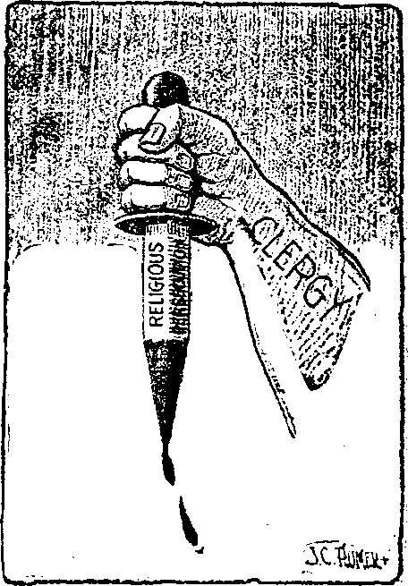

With this issue the price of The Golden Age advances to $2.00 per year—Canada and foreign $2.50
Volume I
PuHi»herf r*^r» othet ^ednetdiT M IS Myrd< A • — <• &*
worth. Hudfingi &l Mirrin. C, J. Wood wot. . ..ri, 0ujrnei> Mfr:
TV. F. Hudfinv. Srt'y-Trww.; Copartners and PrepC - nodrewr 35 Myrtle Aveauc. Brooklyn, N.Y. Price: lOe a copy: $1.50 a yean Canada and foreign. $2.00.
FnfrrcrfiiT jceond-cUw maner «t BraolZyn, N. Y„ petwfict, wtder dtc act «/ XCcreh j, 19n>
New York. Wednesday, September 29, 1920
Number 27
Tp VENTS ot greatest moment have *** happened in this land, of which the people are in Ignorance. These events reached a climax at Los Angeles, California, home «C the multi-millionaires. Muy 17th last, when a highly refined, Christian lady, Mrs. Emma Martin, and three Christian gentlemen V were taken to prison, victims of a conspiracy put in operation by agents of the Department of Justice. These events are so shocking and unbelievable that every editor in the land should have taken up the matter and called for redressive action, but did not. So little has been said through the press that the legerdemain of priestcraft in the days of the Inquisition is brought vividly to mint!
From the Loe Angeles Record of that date we quote:
“Hundreds of members of the International Bible Students Association gathered at the San Pedro dock yesterday to bld farewell to their three friends and associates who departed by the steamer President to serve the federal sentences Imposed upon them during the war for hindering the selective draft The prisoners on the ship and the concourse on the shore joined In prayers and hymns. One stranger Inquired, 'Are these departing missionaries? Sightseers were amazed when told that these were going to the penitentiary for distributing The Finished Mystery*. Mrs. Martin will be taken to State's Prison at San Quentin tonight to serve three years.”
This report Is conspicuous by what
It does not say. Remembering the' -persecutions against Bible Students fu Germany and Austria in 1917 and In Canada in 1913, and how these were instigated and participated in by the clergy on both sides of the ocean. Tn Golden Age, in justice to the people, sent a reporter to Los Angeles to ascertain the facts, and here in New York obtained from Judge Rutherford, President of the Watch Tower Bible A -Tract Society, a general review of the situation and why such things are possible in America. Bls review is so comprehensive and the facts stated are of such vital importance to the people —of transcendently greater Importance than labor and economics, agriculture, manufacturing, transportation, tnven-tlon, etc.—that The Golden Aot devotw this entire issue to the subject.
WHEN a nation or people suffers loss of rights and such calamities would come upon the nations that forget privileges there is something wrong. It is the duty God and^gnore his fixed principles of righteousness.—
of every law-abiding citizen, to ascertain the cause and if a remedy 13 available, help to apply it.
The nations of the earth arc in a great crisis. Calm, sober and honest consideration was never so nniclfSiccded. The purpose of tins writing is to enlighten, aid and comfort by stating the truth iii plain t?rms, the only motive being love for mankind. Tho-e who refrain from valence, calmly new Lhe facts<nd conditions and deal houcotlv. will be a blessing to thcm.-rlvrs and their fellow mm.
The ~rca*c£t calamity that could befall a ration is controversies and deals honestly with his fellow-man wiU destruction by violence. Jehovah forewarned that just he wue. The following will enable tiim to acquire wisdom.
EPITOME
PART T. “Drsvarss or Nations*: Cdu»«, th? Warning, the Tlemcd'j. To Part I will be found pr<x>t of the following points :
Tlint Christendom is in the greatest crisis nf the age; that present conditions were foreknown and foreshadowed in prophecy ; that the closing events of Israel’s history are fccin* duplicated; that the political, financial rind ecclesiastical leaders are combined acainst the common people; that Bolshevism Is feared by the nations of earth: that th» divine r®mo<ly is foreknown sad forotoM, and. if heeded, would avert untold sufferings.
PART II. “Tut Beast at Wab" : 4 Rev-elution in Politics.
The ffreatest game of politics of th* ages Is uncovered: the "beast’’ identified and his purpose r;.posed.
TART 111. The Grand Finnli.
Psalm 9:17; 33:12,
Bolshevism had its birth fa
Russia, where oppression and unrighteousness have long prevailed. All over the earth “men's heart* fare] failing them for fear”— fearing lest this dread malady be inflicted upon all nations. The cause is not recent, but of long star ding. The remedy is certain. '■Who is the wise man, that may understand this?”—Jer. 9:12.
He who acquaints himself with the real cause of present unrest, who refrains from violence, avoids
PRESENT CRISIS FORESHADOWED
Christendom is composed of those nations of earth which claim to be Christian. Judaism finds its counterpart tn Christendom. Gad dealt with that nation exclusively for more than nineteen centuries and used it to fore* shadow conditions and experiences coming to Christendom. Prophecy is history written prior to the happening of the events. Prophecy of the Old Testament has a twofold fulfillment: (1) To a limited extent upon the nation of Israel; and (2) in a wider scope on Christendom. Through his prophets Jeremiah, Ezekiel, Zephaniah, and others, God forewarned Israel of impending disaster, at the same time naming a remedy that would avert such disaster. The fierce hordes of the north country, the Chaldeans, pictured the radical element of Christendom. Warning and remedy apply now.
Israel was ruled by three dominant dements; viz., the king and his household, constituting the professional politicians; the princes, nobles and Pharisees, which embraced. the wealthy, prominent and influential citizens; and the rabbis, scribes and priests, forming the clergy of that time.
In the affairs of ail nations there are usually three elements that work either separately or conjunctively to control and rule the people. These are professional politicians, financial princes and ecclesiastical rulers.
In Israel's time these three elements combined against the common people, were guilty of oppression and extortion, corresponding with present profiteering. Because the clergy in the close of Israel’s experience joined with this unrighteous class, the Lord denounced them for their oppression and designated them as ‘the children of the devil’.—John 8:44.
The clergy shaped the religious course of the people of Israel. They began their career with good intentions, but yielding to selfish desires and flattery, they became lovers of power, desiring and accepting the honor and plaudits of men, and degenerated into an unfaithful clas?i of servants and led the people into idolatry. Time and again Jehovah warned these leaders and showed them his remedy whereby they could avoid great punishment and be restored to his favor. They ignored the divine remedy and the result was their overthrow. This prophecy was fulfilled upon Israel and is certain of fulfillment upon tJhristendom unless the divine warning is heeded. Every sober-minded person should stop and consider and profit by the events of the part.
Christ Jesus organized the church through his apostles. Its beginning was pure, but. afterwards, ambitious men became leaders, tergot th* relationship to God, and formed an^lliance with politicians and financial princes. This alliance is herein designated the "unholy trinity", It has gristed since the early days of the Christian ^ra. These ambitious men in the church formed what his been known as clergy, as dtetingrt?hed from the laity. They have ma te it easy ter protartonal politicians to find a berth in the church. They have tented
the ultra-rich and influential to prominent seats in the synagogues, and at different stages in the world’s history have acted jointly in each other’s interest. In Israel’s time the greatest responsibility rested upon these three . classes. The same thing is true today. This powerful unholy trinity has many instruments it usea, such as suborganizationa and a subsidized, untruthful and dishonest press. The whole scheme is managed by one ' master mind, Satan, whose purpose ever has been and is ■ now to dominate and control the people of earth. ’The proof of this point we particularly set forth in Part II.
In the church systems, Catholic and Protestant, there
are many honest, sincere and lovable people, who because
of the influence of the unholy trinity are prevented from a full service and devotion to the Lord. Jesus particularly manifested his love for the meek and oppressed and
so he still manifests his deep interest in the same class.
tinctly; and for this reason this great prophecy has a
special interest now to all order-loving people who calmly
view the present stress of humanity.
The prophet Jeremiah typified the Christ. In soma
instances the prophet represented Jesus alone, while in ' , • other instances he typified some specially favored servant of the Lord, and afc other times represented a collective / number of the members of the body of Christ. .
Where the words Israel and Judah are used by the prophet Jeremiah Israel represents the Roman Catholic . hierarchy, while Judah represents the Protestant ecelesi-astical systems. Where the word Judah alone is used in referring to the Jews the reference in antitype is to the ‘i
entire ?ystem of churchianity, including the Papal and
Protestant systems, together with their subordinate organizations such as Knights of Columbus, Y. Af. C. A., etc.
people of the north foreshadowed or represented the com- "
mon people of the present social order. From chapters 1 to 49 of the prophecy of Jeremiah the king of Babylon pictured particularly Bolshevism, which exercises a great governing o1" controlling influence over the radical elements of Society at this time. Bolshevism, true to the * prophetic picture, had its origin in the "north country’ ,
or Russia and threatens to overrun the nations of earth. ;
In chapters 50 and 51 of Jeremiah’s prophecy the type changes and Babylon (meaning confusion) represents Christendom, including all ecclesiastical systems. Catholic and Protestant, who have mixed politics and worldlings with their religion, forming the unholy alii- , ance. it is the same picture that is shown in Revelation ' 17th and 18th charters, which pictures murt be completely fulfilled before the inauguration of Afeteiah’s ’
Jesus was asked by his di?ciples as to That would be : proof of the end of the world and he gave the answer. By J
the word “world” is not meant earth, but the order of society during a given or stated period of time. The disciples were informed that when the period of the end of the world was reached there would be “upon earth distress of nations with perplexity,... men’s hearts failing them for fear [of what they see] coming upon the earth”; that “nation” [would] rise against nation and kingdom against kingdom” in a great world-war which would be followed by other distressing conditions. This prophetic statement of Jesus began to have its fulfillment in 1914 with the coming of the world war, which war God had foretold through the mouth of his prophets many centuries before* (Joel 3: 9 - 14; Matthew 24:17; Luke 21: 25) The world war has greatly weakened the nations. All the great industries were employed to win the war. Wages were high while the war progressed. Suddenly the war ended, but the cost of living does not decrease with the end of war and the workers insist on a living wage. Profiteering has influenced the spirit of discontent. Injustice and unrighteousness have so long prevailed that the mass of mankind have lost faith in the clergy cud their allies, and the spreading of discontent goes on at a rapid pace. The burden of the common people increases, while ecclesiastictsm and Big Business raise more money, hoping to strengthen their position.
THE REAL CAUSE
It will be conceded by every one that had all classes of people dealt justly with each other, had their actions been prompted by love and unselfishness, had they put into operation the golden rule, there would have been no world war, there would be no widespread discontent cr threatened troubles following the war. For nearly eighteen centuries the clergy have posed as the mouthpieces of the Lord on earth, claiming to be his followers and the teachers of his Word. But it is fact that needs no proof that as a class they have failed in their mission. God foreknew and foretold the exact condition we now see on the earth. Therefore we should expect to find that he also foretold the cause for such conditions. The facts disclose that the greater blame lies at the door of the clergy class, including the Catholic hierarchy and its Protestant allies; that they have not only gone wrong themselves but have led the people into forbidden paths, and that the divine judgment is at hand unless the divirnsxemedy is heeded.
Jesus commissioned his followers to preach the glad tidings of his coining kingdom and to announce that the blessing of the world would begin with its establishment; and until then the duty devolving upon all his true follbwer^ was and is to keep themselves separate from the^worVd and from all entangling alliances with politics of othftr things of the world. We should therefore expect that if these who claim to be his followers and mouthpieces in the earth should depart from the plain in>truct!or.a of the Master and form alliances with earthly irjWir.'-'r?, Ji-a-t-T would befall th^m and choir allies unless they should fully repent anl rrferm.
Satan, the prince of darkness, has always been the personification of fraud and deceit, wickedness and wrongdoing. The Scriptures foretold that Satan would have a seed; that is to say, men who would be his representatives, either consciously or unconsciously—and such is called in the Scriptures, 'the seed of the serpent’. The Scriptures also show that the true followers of Jesus, without regard to denomination and creed, are designated as "the seed of promise” and that there would be a great conflict between the seed of the serpent and the seed of promise until Satan’s kingdom is utterly de-troyed. It would follow, then, that any one of the class of men, even though professing to be followers of Jesus, who would depart from his teachings, allying himself with the powers of darkness, misrepresent his Word and engage in the persecution of the true and humble followers of the Master, would be included in the Scriptural term, ‘the seed of the serpent’.
Jesus designated the clergy of the Jewish time as “the seed of the serpent”. (John 8:44) The class of the present time forming the counterpart of that Jewish order must be placed in the same category, according to the words of the Master.
INDICTMENT FOR CONSPIRACY '
A conspiracy is an agreement between two or more persons or classes to do a wrongful act. A conspiracy may be established by an express agreement or may be inferred from the acts or conduct of the parties working for the accomplishment of one general purpose. The clergy as a class openly claim to be the Lord’s representatives on earth: therefore the allying of themselves with.; worldly classes or organizations to accomplish a purpose contrary to the Lord’s command would bring upon them the special indignation of the Lord, which would necessarily involve those allied with them.
Jehovah, through his holy prophets, laid an indictment against the unfaithful leaders and rulers of Israel, which* indictment is also laid, according to the rules of prophetic application, against the clergy and allies of the-present time. The charge in this divine indictment* briefly, is unfaithfulness to the Lord. Stated in prophetic phrase, the formal part of the indictment reads: “Be; astonished, 0 ye heavens [high ones in ecclesiastic systems] at this and be horribly afraid, be ye very desolate, saith the Lord. For my [professed] people have committed two evils: (1) they have forsaken me, the fountain of living waters [source of life and truth] and (2) have hewn them out cistern [man-made system* and creeds], broken cisterns that can hold no water [really contain no life-giving truth].”—Jeremiah 2: 12, 13.
A conspiracy is formed amongst the men of antitypical Judah and Jerualom, namely the hypocritical and unfaithful clergy, Catholic and Protestant and their suborganizations, Knights of Columbus, Y. II. C. A., etc., together with the financial giants and professional poli-licans, to estatblish a sysrem on earth for the control of mankind, and against the anointed of the Lord, the "seed of promise”, and against the common people and to deceive the people by setting up a counterfeit of Messiah's kingdom. To accomplish this wrongful purpose "they [have gone] after other Gods to serve them”, to-wit: gods of power, wealth and fame.—Jeremiah 11: 9,10; 18:18.
OVERT ACTS
In furtherance of such conspiracy the clergy in particular* and their subordinate organizations and allies have committed the following overt acts, to-wit:
(1) They have forsaken the Word of God, formulated and taught doctrines and creeds of their own, and set up other idols which they worship:
(2) The ecclesiastical systems, under the leadership of a disloyal clergy, have committed fornication with the powers of state, political and financial; and
(3) Posing as the representatives of the “Prince of Peace” a disloyal clergy have openly advised, encouraged and advocated deeds of violence and “on [their] skirts is found the blood of the souls of the poor innocents7* (Jeremiah 2: 34) ;
(4) ’They have resorted to lying, fraud and deceit, thereby leading the people into paths of error—and destroyed their faith in God and his Word (Jeremiah 12:10,11; 14:13,14; 5:25-30; 8:9-11; 9:3, 9);
(5) They have scattered the flock of God, the true Christians, and suffered them to starve;
(6) Hating the light that exposes them and their disloyalty to God, they have persecuted the light-bearers (Matthew 5:14), and by and through their wicked spy system they have sought out, arrested, persecuted, imprisoned, and killed the loyal servants of the Lord;
(7) Although divinely commissioned to teach the people concerning Messiah’s coming kingdom as the only chaj|nel and means of lasting peace, righteousness, liberty, life and happiness, they have, contrary to this command advocated and endorsed the formation of an earthly “league of nations” and hail it as the savior, deliverer and blesscr of mankind; all of which is a pollution of the office assumed by them and contrary to and against the peace and dignity of Jehovah and his Word.
THE PROOF
It is but necessary to call attention to the well-known and indisputable facts that have developed in recent years to establish beyond question the truthfulness of eveay overt act charged in the indictment. We consider the main charge of the indictment and the overt acta in the order named.
(1) The forsaking of the Word of God and the establishment of man-made creeds instead:
Nineteen centuries ago Jehovah began the development or the^seed of promise’’, Jesus the Head and the churchftiis body. Jesus referred to the members of his body as 'branches of the true vine’. (John 15:1.2) The church began its development in purity of practice and in action. Of it Jehovah said: ’T planted thee a noble vine, wholly a right jeed; how then art thou turned into a degenerate plant of a strange vine [vine of the earth] unto me?”—Jeremiah 2: 21; Revelation 14:19.
Jehovah gave to the chutch nominal, particularly its leaders, the greatest commission ever held by any earthly creature, viz.: To preach the glad tidings-of great'joy of Christ’s coming kingdom through which all the families of the earth shall be blessed. (Isaiah 61:1-3; Luke 9:60; 1 Corinthians 1:21; 9:16) What a wonderful and blessed opportunity to carry to a sad and sin-cursed world the very message of comfort all needed 1 To deviate from that message, or to teach instead man-made doctrines amounts not only to a falling away but to positive disloyalty to the Lord. Christians are plainly told: “Love not the world [honor, plaudits, and the things that the world can confer] neither the things in the world”. “Be not conformed to this world,” but “keep [yourselves] unspotted from the world".—1 John 2:15; Romans 12: 2; James 1:27.
The early church grew rapidly and at first there was, no distinction between the members, such as clergy and laity. The early histoiy of the church nominal is full of beautiful stories of self-sacrifice and loving service. But Satan was active in planting *his seed* among the loyal ones; prosperity and wealth came, and with them came men ambitious to be leaders—lovers of the world*. Office seekers crept in, obtained control and soon substituted formalism for simplicity of worship. Theological contentions took possession of the church organization and the religion of Jesus Christ became a political society. The church nominal surrendered to the Emperor of Rome, Constantine, who notwithstanding he put to death his own sister, his son and his wife, was fawned upon by the ambitious clergy and was chosen as the champion of the church. Christ and him crucified then became and still is a reproach to the self-seeking ones. The state became so-called “Christian” and the church became imperialistic. True Christianity in its organization was supplanted by politicians and bishops and the divinely given commission was cast aside. The selfish, ambitious clergy paganized and impcriah’zod the religion of Jesus, and their disloyal course caused vast numbers to accept the new nominal Christianity, and thus true Christianity was turned into a political religion. The clergy loved the honors of the world and still love them and despise the sclf-sacrificing position of the one who faithfully performs his God-given commission. With tho edict of Justinian came the parting of the ways between the true church of Christ and the church nominal— between Christianity and churchianity—and they have never met again. From then till now the true Christian has been ruthlessly persecuted by the church nominal.
The clergy took away the Bible and forbade the common people to read it and enacted laws making the possession of the Bible by a layman a criminal offense. From Arias till now some of the true followers of Jesus hare dared hold aloft the banner of truth and thereby subjected themselves to wicked persecution. Time came
when there was a great Protestant reformation, but alas, today the so-called ‘•Protestant” church is a system without the protest. The God-dishonoring doctrine of eternal torment originated by Satan and first taught by the Papacy is eagerly taken up and proclaimed to the people by many Protestant clergy who know they are teaching a falsehood, a defamation of God's character. In all the theological colleges the doctrines of higher criticism and evolution are substituted for the message of the Lord, k his sacrifice and his kingdom. Instead of keeping themselves unspotted and separate from the world the larger percentage of the clergy—Catholic and Protestant—seek * an alliance with the professional politicians and the financial giants who can confer wealth and honor upon them. Instead of humbly serving and worshipping God, they serve the worldly minded, and set up idols of gold, earthly power, and influence which they freely worship. The proof of the first overt act charged in the indictment is common knowledge and fully apparent to all.
Second: Spiritual fornication, the second overt act charged, means illicit relationship between the church and the $t'ate.
The true church of Christ is spoken of in the symbolic language of the Bible as a “pure virgin”, while the apostate church system—one that has forsaken God—is symbolized by an impure woman and in the Scriptures des* ignated as a “whore” or “harlot”. Papacy being the first to forsake God and ally herself with the political powers is designated as “the mother of harlots, and abominations of the earth”. (Revelation 17:5) The Biblical language clearly implies that the church nominal is guilty of illicit conduct. With whom? Jesus answers, ‘'With the kings,” political ruling classes, and the “merchants”, the financial powers.
“For all nations have drunk of the wine of the wrath of her fornication, and the kings of the earth have committed fornication with her, and the merchants of the earth are waxed rich through the abundance of her delicacies.” (Revelation 18:3) The clergy—Catholic and Protestant—openly seek an alliance with prominent men of the world, either political or financial, thus committing spiritual fornication. The prominent men are in symbolic language of the Bible designated as “a green tree”. (See Psalm 37:35) It is an indisputable fact, well known for centuries, but more particularly made manifest in modern times, that whenever a person rises to profcunence in a community, either a politician, merchant or other wealthy man. the clergymen and their chief parishioners conspire together to induce such prominent person to become a member of their church, regardless of whether such prominent person claims to believe on and lo\e th? Lord or not. To such unfaithful ones the Lord J$ys: “Cpon every hi'/h hill and under every erren ‘rc«‘thou wandercst, playing the harlot”.—Jeremiah 2: 20.
The clcrtry claim for themselves the divine right to interpret the Bible and they interpret it to suit their own
selfish passions. In modern times they have adopted * worldly methods in their work. Organizations such as the Knights of Columbus, Y. M. C. A., etc., are the children or offspring of the church systems. They use the v Bible in a distorted attempt to show the propriety of c' controlling the political affairs of this world through the church and their offspring organizations. They run after the political lords and professional politicians and $ brazenly offer the church systems as an added means to control the people. The church system’s methods are bo very brazen in her attempt to ally herself with unholy earthly interests that the Lord says to her: “Thou hast | a whore's forehead and refusest to be ashamed". (Jeremiah 3:3) And so abominable is the conduct of the church system, her clergy and her children in seeking the companionship of the professional politician and the ? financial powers that the Lord likens her to a certain I wild beast who at the time of her regular heat seeks beastly gratification from any one who will accommodate her, saying to her, "How canst thou say I am not pol- -luted, I have not gone after Baalim ? Sec thy way in the ' valley, know what thou hast done: thou art a swift dromedary traversing her ways; a wild ass used to the |
wilderness, that snuffeth up the wind at her pleasure; in ,
her occasion who can turn her away ? All they that seek her will not weary themselves [to locate her]; in her . month they shall find her.”—Jeremiah 2: 23, 24. *
Third: The third overt act charged is that of respon- ’ sibility for the great wars that have afflicted the peoples of earth and particularly the world war which began in 1914 at the end of the Gentile Times. And for this I
cause the Lord says to them: “On thy skirts is found
From God's viewpoint the church must stand for things ' spiritual as distinguished from worldly governments. The commission to the followers of Jesus nowhere commands them to go to war, but exactly the contrary course is prescribed. Jesus said: “My kingdom is not of this ' world: ... [if it were] then would my servants fight”. When the mob assaulted him he said he could call for twelve legions of angels to fight his battle, but he declined . to resort to force. He even forbade his disciples to use weapons of defense. The church is his body, the members of which are called to follow in his footsteps. (1 Peter 2:21) If worldly nations want to fight that is . ’ their business. The followers of Jesus to be faithful must obey his expressed will and refrain from shedding blood.—2 Corinthians 10: 3, 4.
But the majority of the clergy have abandoned the will of the Lord and set up their own will. This they do. It is the clergy who taught the kings to believe that they ruled by divine right. From their teaching . came the axiom, “The king can do no wrong—this upon the theory that the king (political governing factor) represents the Lord on earth, and since God can do no wrong, neither can the king—ruling by divine right—do wrong. But rulers have convinced themselves that to make war upon a neighboring nation is justifiable, because the clergy have so held and taught. Had the professed Christian clergy taught the people the truth, and had the people received it, there would have been no wars between Christian nations nor wars of Christian nations against other nations. The truth would have turned the people away from an evil course and saved them from the horrors of war. The preachers have preached war contrary to God’s Word, as he says: “I have not sent these prophets, yet they ran: I have not spoken to,them, yet they prophesied. But if they had stood in my counsel [Word] and had caused my people to hear my words, then they should have turned them from their evil way, and from the evil of their doings”. (Jeremiah 23: 21, 22) Hence the responsibility of the clergy for “the blood of the poor innocents”; and God will require at their hands a fearful accounting, un/esa they speedily avail themselves of the divine remedy.
Fourth: The clergy have forsaken God in this, that they have resorted to lies, fraud and deceit to build their own systems, and thereby led the people into error and away from God. Tor centuries they have maintained their organizations by imposing upon the people the fake, doctrines of eternal torture, purgatory, masses for the dead, etc., and thereby induced many honest people to support them morally and to contribute large sums of money for their upkeep. They have taken the position that all who are saved must go to heaven and that such must unite with one of their church systems in order to secure a passport to heaven; whereas,, on the contrary God's Word shows (and they should have told the people this) that the mass of mankind will be saved on earth and restored to perfect manhood during Messiah's reign. Since the great war the clergy are saying, “We must have some new religion, the soldier will not stand for the old,” some new stories by which to deceive the people and hold them in bondage.
The people greatly desire peace, liberty and life in happiness, all of which blessings the Bible teaches are coming to man during the Millennial reign of Christ. The clergy scoff at these great truths, deny the Millennial reign of the Messiah, and resort to fraud and deceit in order to keep the people in subjection and to feed fat their own selfish desires. Hence God says to them:
• “For among my people are found wicked mon: they lay wait, as he that setteth snares: they set a trap, they catch mep. As a cage is full of bird.-, so are their houses full of deceit-; therefore they are become great, and K-ixen ri®(i. They are waxen fat. they shin*; yea they overpass the deeds of the wicked: ih«*y judge r.of the eausm the cause of the fathorlr-s. yet they pm.-p-’r: and the right of the needy do they net judge. Shall I not
visit for these things? saith the Lord: shall not my soul be avenged on such a nation as this? A wonderful and horrible thing is committed in the land; the prophets । prophesy falsely, and the priests bear rule by their means; and my [professed church] people love to have it so; and what will ye do in the end thereof F'—Jere-miah 5: 2G - 31. ,
Many of the clergy class have claimed to have power to forgive sins and use this fraudulent and deceitful means to extract money from the pockets of the people. They have claimed to be the friend of the common people, ; i Xhoreas they deceive and defraud the people. Hence ■ ’ God says of those unfaithful stewards: “And they de- j ceive every one his neighbor, and will not speak the ■
truth; they have taught their tongue to speak lies, and
know me, saith the Lord.... Their tongue is as an arrow
the Lord: shall not my soul be avenged on such a nation
prophets [preachers] preach lies in my name: I sent
deceit of their heart.”—Jeremiah 9:5, 6, 8, 9; 14:14.
Fifth: That the clergy,t pastors, priests, etc., have ' scattered the flock of God, and left them to starve and ■ * die. The Scriptures refer to the followers of Jesus as “the flock of God”. The positive command given the : elders and leaders (who became clergymen) was “Feed ; the flock of God which is among you, taking oversight ;
thereof, not by constraint but willingly, not for filthy
clergy failed to teach the people the Bible truths which
satisfy the hungry soul, namely, the Hansom, Resurrcc- ; tion and Restitution blessings which will be extended to • all people during the reign of Christ now beginning. : And when any of “the flock” sought and found the truth the clergy have scolded, threatened and persecuted them : and scattered the Lord’s sheep among the ravenous beasts ‘
of the earth—and have destroyed the faith of many thou- , sands. When some of the humble followers of the Master !
brought forth the pure message of truth, exposing the j
error, this unfaithful clergy class caused the suppression I of that truth and the prosecution and imprisonment of the humble teachers of the people, for which denunelation is pronounced upon them by Jehovah.—Ezekiel 34:1-8. : j
“Woe unto the pastors that destroy and scatter the she^p of my pasture! saith the Lord. Therefore thus
saith the Lord God of Israel against the pastors that feed my people: Ye have scattered my flock, and driven them away, and have not visited them; behold I will visit upon you the evil of your doing, saith the Lord.... Therefore thus saith the Lord of hosts concerning the ‘ preachers: Behold, I will feed them with wormwood, and make them drink the water of gall: for from the prophets of Jerusalem [interchurchianity] is profaneness gone forth into all the land?’—Jeremiah 23:1, 2,15. / *' Sixth: In forsaking the Lord and following the evil tendencies of their own hearts the unfaithful clergy and assistants have committed the overt act of hating and ' wilfully spying out and persecuting the true and humble followers of Christ Jesus.
God foreshadowed and illustrated this in the life experiences of Esau and Jacob. Although heir to the Abra-hamic promise—Esau, because of his love for fleshly ‘ gratification and earthly pleasure, sold his birthright for a mess of savory meat, -and then persecuted Jacob because the latter made effort to avail himself of the prize he had justly bought. Esau pictured the class of Christian people—laymen and clergy—who have loved the pleasures of the world, honor and preferment of men, and despised the promises of God concerning his kingdom blessings. Jacob pictured the humble and faithful j z Christians who purchased the heavenly birthright by ' selling their all in full consecration to the Lord. The Esau class—faithless ones—have persecuted the Jacob class, faithful ones, who preferred to suffer persecution and death, remaining faithful to God rather than yield to the spirit of the world and lose the promised prize. The very faithfulness of the Jacob class has been a rebuke to that class who have desired to use the Christian religion as a camouflage to hide their evil and selfish course. Of the true Christians Jesus said: ‘’Ye are the light of the world”. The selfish, faithless clergy have hated this light. The true Christian prog!esses in the knowledge of God’s plan. “The path of the just is as a shining light that shines more and more unto the perfect day.” Every progressive step of the true follower of Jesus has met with vigorous persecution at the hands of the clergy cla^s.
CHURCH-STATE DESTROYS RELIGIOUS LIBERTY'
-The Lord divided the development of his church into sevetFepochs, progressive in their order. To each epochal stage ho provided a human messenger. Each of these in turn was persecuted by the leaders or clergy class. The persecution of Arias. Waldo. Wycliffe, and Luther was led by the Papacy. The messenger to the seventh epoch ’<?f the church vas Pastor Russell. For forty yev5 he held aloft the light of the gospel of Messiah’s kingdom, which light exposed the deceitful and fraudulent claims, doctrines and practices of the clergy, and true to their matir.ct ar.d pas: history the unfaithful, dishccest clercv — Cath:-’:., and Protestant—wickedly and releu-.iCi-ly persecuted Faster Ru-.mll and his a::o-ciates in service. In 1916 he finished his earthly course and others took up the burden where he laid it down and vigorously carried it forward, and like him they have been objects of persecution.
The Catholic hierarchy and the Protestant nominal church systems have created societies, such as the Knights of Columbus, Y. M. C. A., Interchurch World Movement, etc., to aid in their work, and these have rendered valuable aid to their parents. It has been another means to cement firmly the “unholy trinity”. Their members are active in politics and fill important offices in every branch of the Government. They respond readily to the wishes of a parent clergy. These members of the antitypical Esau class have hated and maliciously slandered Pastor Russell, the friend of the people, and his zealous associates. The great war furnished the opportunity to make manifest that hatred. In 1885 Pastor Russell began the publication of a series of Bible comments—Studies in the Schiptubes—in seven volumes, six of which he published in his lifetime, and the seventh, “The Finished Mystery,” was published after his death. It is an interpretation of Ezekiel and Revelation. These prophetic books of the Bible contrast the course of the true with the nominal church. In prophetic phrase the Lord foretold the persecution of- the true by the false, and the great hypocrisy of the clergy. Necessarily “The Finished Mystery” explained these1 Scriptures in the light of the historical facts—recording fulfilled prophecy. This greatly angered the clergy, because it interfered with their scheme to further defraud the people, and they sought an opportunity for vengeance.
The so-called “Espionage Law” furnished an effective weapon. It was to be expected that this law would search out spies. But what spy was prosecuted under the law? The chief selected for its enforcement was a well-, known, ultra-nominal churchman, who is known ta a heretic-hunter, having heretofore prosecuted Rev. Crapsey for heresy. He was aided in the collection of evidence by a “dyed-in-the-wool” Knight of Columbus, and both of these men have ready ears for the cry of the clergy. The penalty for violation of the Espionage Law did not seem sufficiently severe. Early in 1918 a convention of clergymen was held at Philadelphia, at which a resolution was adopted calling upon congress to provide that alleged violators of the Espionage Law should be tried by court-martial and death inflicted as a penalty. A general in the United States army was authority for the statement that the purpose and intention of this proposed law was to punish the officers of the International Bible Students Association and the publishers of “The 1 im-hed Mystery” by putting them to deathu
A bill was pending before Congress to amend the Eipiona^e Law so that one charged with its violation n"'ght have an opportunity to make further defense. The member of the Department of Justice having in charge, the enforcement of th:s !a^, namely, Joznr Lor.3 O’Brian, appeared before the Senate committee
> £
having in charge the bill and argued that the amendment be defeated, assigning as his reasons therefor three classes that he could not prosecute successfully if the amendment carried, the three classes named being “The Finished Mystery/’ the “International Bible Students Association/’ and the “Kingdom Notts”. Mr. O’Brian well knew at the time that the three represented but one class of Christians. No other conclusion can be reached than that he deliberately misled the United States Senate into defeating this amendment. His report appears in the Congressional Record of May 4th, 1918.
Public sentiment must be worked up against the "offensive Bible Students”. Th? clergy started the ball. Another member of the unholy alliance, big business, dominates the public press. Unscrupulous politicians holding office are ready tools. First the books of account of the Bible Students were seized, on a pretext that money was being obtained frpm the enemy, Germany. For five weeks experts searched them and found not one penny coming from a questionable source. It was then discovered that before the war a little wireless receiving instrument had been presented to Pastor Russell and placed on the roof of the Bethel Home, and some of the boys had been attempting to learn the code. It never had a sending instrument. No messages ever were sent or could be sent from it. In November, 1917, this instrument was removed and stored in the basement. In the search by the secret service agents it was found packed away in the basement, hauled out and then a deliberate lie was sent by the Associated Press throughout the world, announcing tha t the Russellites were maintaining a powerful wireless on the roof by which they could send messages across the ocean to the Germans—all of which was necessary to work up public sentiment. Thon followed the indictment of the officers of the Association and their trial amidst a great excitement'of the war. Being thus staged, a verdict of guilty was easily obtained. Sentence followed, in which seven of these Bible Students were sentenced each for eighty years’ imprisonment. Bail was denied and they were immediately incarcerated and remained in prison for nine months, without the privilege of bail, pending appeal. Later they were released and upon a hearing of the case in the Appellate Court that court reversed the judgment of the lower court, holding that the defendants had not been given^fair trial. On May 5, 1020. the indictments were dismissed by the Government and the defendants discharged. The defendants were thereby exonerated after suffering nine months illegal imprisonment: but the subsidized press industriou-ly avoided publishing any facts abot\t that part of it.
While these men were in jail their friends circulated a petition calling upon the authorities to grant them bail or a re-trial. Mr. John Lord O'’Brian. contrary to all precedent known to American legal ethics, sent circular Liters throughout the country defending h:= position in the prosecution of these men.
WIDESPREAD PERSECUTION
The spring and summer of 1918 witnessed a widespread persecution of Bible Students, both in America and in Europe, at the instigation of the clergy in every t c&ss. The homes of the Bible Students were searched ! without warrant, their hymn books, Bibles, “Studies in . the Scriptures,” and other Bible literature were seized, : carried away and in many instances destroyed. In Lo<s , Angeles, California, every kind of Bible literature was seized by officers without a search warrant, and ' , many of the Bible Students were arrested and thrown , into jail. Others were beaten, their ribs broken, their I heads cut and some permanently injured. Inoffensive men and women were mobbed and thrown into jail and held there without charge or without trial. •
WHEN AND WHERE MINISTERS WERE ANARCHISTS
Baptist ministers, taking advantage of war conditions, ; caused the following outrages:
jailed nine days at the instance of Rev. E. D. Cameron,
tentiary. No offense was ever charged and the case was
never brought into court. April 23, 1918, at Miami,
Texas, Mr. and Mrs. R. A. Bayless were jailed several i
days at the instance of Rev. J. C. Stalcup. May 30. 1918,
at Post Oak. Missouri, W. L. Bowen’s new automobile
was disfigured and carried, to Leeton, Missouri, by a mob " :
his church. Rev. Newkirk is now insane.
Methodist ministers caused the following outrages:
1918, at Winnsboro. Texas, G. W. Wilcox was jailed in a filthy privy over night. April .28. 1918, at Farmington, ■ . Washington. Mrs. C. A. Imhoff was threatened with 1 imprisonment. At Tamaha, Oklahoma. Mr. and Mrs. > < B. Merriman and M. R. Charley were jailed six days at the instance of Reverend Phal. Mr. Charley, 65 years » of ago. died from the effects of his imprisonment. May i
1. 1918, at Mc.-a, Arizona, an Episcopalian minister
joined with a Methodist minister in causing the jailing j for twn days of P. R, Starks.
Tn March. 1918. at Enid. Oklahoma. L. F. Hall was
jailed three time- and bonded for $12,000 on complaint
of a L'rhcrcv. miui.-icr. On Mav 2?, 1918. at Harrah,
Oklahoma. Jesse Hearn was jailed two days without warrant or explanation and beaten into insensibility in his ' own field by a mob organized by a minister of the so-called CAru’rian denomination. • .
Other ministers, acting individually, or in groups procured the following outrages:
March % 1918. at Chickasha, Oklahoma, A. H. Sam, pley and Mr. and Mrs. S. S. Croy were jailed and fined. March 17, 1918, at Walser, Idaho, two colporteurs were / threatened and compelled to stop work. April 30, 1918, - at Thayer, Missouri, Charles Franke, Edward French, M. R. Griffin and Mr. and Mrs. D. Van Hoesen were taken to the Y. M. C. A. and threatened by a mob. Griffin was forced to leave town and sacrifice home and business. The postmaster here held mail in the Post Office six months without delivery, April 30, 1918, at ' Mammoth Spring, Arkansas, Mrs. Minna B. Frauke was mobbed and compelled to close out a $10,000 stock in - one day and leave town. At Garfield, Washington, Donald Main and Mr. Ish were jailed and threatened with death. At Minerva, Ohio, S. EL Griffin was first jailed . and then released to a mob, then lectured fifteen minutes by the minister, then struck repeatedly, cursed, kicked, trodden upon, threatened with hanging and with drowning, driven from town, spit upon, tripped repeatedly, jabbed repeatedly with an umbrella, forbidden to ride, J* followed five miles to Malvern, Ohio, rearrested, jailed for safety at Carrollton and finally taken home by brave and faithful officials who, after examining his literature, said, in so many words, “We find no fault in this man".
Companies of ministers, acting together, procured the following outrages;
March 20, 1913, at Checotah, Oklahoma, T. H. Bradford was jailed two nights, his home entered and Bible study textbooks seized and he was driven from town. March 27, 1918, at Corpus Christi, Texas, the home of Mrs. Clara Hanke, a native American, was raided, her person attacked and threatened and Bible study textbooks seized. April 24, 1918, and April 28, 1918, these raids were repeated, accompanied by more threats and by an invasion of Mrs. Hanked bedroom when she was resting on the bed. The Court’s final disposition of the matter, April 30, 1918, was that no more literature of the kind should be circulated during the war inasmuch as it hurt the feelings of the clergy. At Globe, Arizona, IL Bender and P. R. Starks were jailed two days and three-ministers were heard to urge the officials to “Give the boys the limit”. -
April 12, 1918. at Medford, Oregon, E. P. Taliaferro was mobbed and chased out of town for preaching the gospel and George R. Maynard was stripped, painted and driven from town for permitting Bible study in his home. April 14^,1918. at Denison. W. E. Murphy, P. E. Wiltiams, A. M. York. J. \V. Safford. B. Drake and A. E. Class were mobbed and attorneys forbidden to accept the case. Knights of Columbus assisted the clergy in. the Denison outrage.
April 2Z, 1913, at Camanche, Oklahoma, O. M. Davis and son were insulted and threatened. May 1, 1918. at Tulsa, Oklahoma, Mrs. Beulah B. Covey was arrested and suitcases and Bible study textbooks seized without warrant. May 4, 1918, at New London, Ohio, Clyde Morrison and Claude Morrison were mobbed and arrested. May 8, 1913, at Greenville, Mississippi, Mrs, L. F. Lartigue was arrested, but after Avamination of the literature the sheriff dismissed her with the statement, ‘‘No one could find fault with those papers except
—From The Xeie Era Enterirlee.
‘•In Thx SK-tiTs Is Foe nd the Blood of Socls ar the Pooa Ix.nocs.nts."—Jerenrih 2:2-*.
the clergy". At Celeste, Texas, a mob demanded the arrest of A. J. Tolbert, G. B. Weaver and Mrs. Harvey Huddleston; the demand was refused by the authorities but the parties hud to leave town to escape violence. June, 1919, at Rochester, New York, William E. Wheeler was twice arrested and bro* beaten for circulating a petition appealing for the release of Bible Students unjustly sentenced to prison. All the foregoing outrages were directly incited by two or more clergymen.
Church member*, acting as tools of clergymen, caused fr-mtiar outrages as follows:
March 28, 1918, at Monroe, Louisians, Henry C. Humble was made to lose a government position and was jailed three months at the instance of two Methodist church members, one of whom secured his job. April 28, 1918, at Centreville, Iowa, E, A. Talbott was abused, threatened and jailed three days at the behest of a mob of whom four announced themselves as church members determined to secure his imprisonment. October 16, 1918, at Marshfield, Oregon, Fay R._ Smith was thrown out of employment and jailed twenty-four days on complaint of two prominent Presbyterians.
Catholic priests were not in any mobs that attacked Bible students. They have had centuries of experience in getting results otherwise. At present if they want any rough work done for them they tuse the Mollie Maguires, alias the Ancient Order of Hibernians, alias the Knights of Columbus. Also, they prefer to put these people in office first and then use them with a show of legality, instead of following the coarser, less efficient mob tactics of the Protestant ministers. This is the Beast in action. Attention is invited to the following, by way of illustration of the point in question:
March 4, 1918, at Hazleton, Pennsylvania, Benjamin Kimmel, Reuben Platt, Amos K. Smoker and William Kimmel were jailed by two alleged officials named McKelvey and OJLarnic, given a hearing before Curcio in the office of Gorman, questioned by O'Brien in the presence of McHenry, McDermott and Boyle. March 4, 1918, at Scranton, Pennsylvania, Clayton J. Woodworth, M. L. Herr and Stanley Young were arrested by McCourt and McHenry and arraigned before Kilcullen. April 28, 1918, at Boise, Idaho, Dr. H. D. Morris and nine others were jailed and covertly threatened with mob violence by McClear. That night Dr. Morris' house was disfigured. April 30, 1918, at New Orleans, Louisiana, James M. Wilbon, carrying a permit from the Mayor for distributing his literature, was jailed two days by Mooney, the Chief of Police. At Jacksboro, Texas, Miss Lula E. Jackson was visited by the sheriff twice, once with McCombs and once with Keith, demanding the surrender of Bible study textbooks. May 18, 1918, at Houston, Missouri, a poor woman, Mrs. Gertrude Kimpe, was jailed by McCaskill because she was unable to buy bonds. At Henderson, North Carolina, Mrs. K. W. Edwards was repeatedly threatened, the threatened including a Judge and a Roman Catholic. At Kennebec, Main^Mrs. Frederic Holmes was grilled three hours by McKean. At Rossville, Georgia, G. W. LaFerry was visited by Finley, who demanded all his religious books and literature.
JUDGES DO SCALE WONDERFUL THINGS
March 14, 1918, at Pomona, California, J. Eagleston was jailei? nfreen days in prison tanks, four of them with no bsd or mattress, insufficient covering and insuffi-cenr feed. When th? jury disagreed, 5 to 7. the Judge SiLd in open court, ‘'ll there is no law to sevrle these cases, they will be settled, if it is done by the American people themselves". What did this Judge want done by the American people? ‘
April 17, 1918, at Shawnee, Oklahoma, G. N. Fenn, George M. Brown, L. S. Rogers, W. F. Glass, E. T. Grier and J. T. Tull were jailed. During the trial the Prosecuting Attorney said, “To hell with your Bible; you ought to be in hell with your back broken; you ought to be hung". When G. F. Wilson, of Oklahoma City, attempted to act as counsel for the defense- he also was arrested. Each was fined $55 and costs; offense, distributing Protestant literature. The trial Judge encouraged mob action following the trial, but the mobs were foiled.
April 22, 1918, at Kingsville, Texas, L. L. Davis and Daniel Toole were chased by a mob led by the Mayor and a County Judge and subsequently caught and jailed without a warrant. Davis was forced out of his job. In May, 1913, at Tecumseh, Oklahoma, J. J. May was seized and incarcerated thirteen months in an insane asylum by the order of a Judge, after threatening and abuse. His family was not advised as to what had been done with him. '
In June, 1918, at Roanoke, Virginia, C. W. Morris was jailed three months for being “a strict adherent of the Pastor Russell sect" and was warned that if, after his release, he preached his doctrine he would receive much worse treatment. In fulfillment of this, in the same city, February 15, 1920, Alex. H. Macmillan was jailed by the Mayor, without warrant or charge, at the hour when he was advertised to lecture to the public on the topic, “Christ's Second Coming Near; Millions Now Living Will Never Die".
In the spring of 1918, at Los Angeles, California, Ernest D. Sexton, with twenty-five others, was tried for distributing Protestant literature which the trial Judge, Benjamin Bledsoe, admitted contained nothing whatever seditious. The only charge against several of these men was that they had attended a prayer meeting. Not a scrap of evidence was produced against a number of them. The jury disagreed and the case was dismissed, but while en route to the bull-pen these innocant Christian men were assaulted and terribly beaten by the Roman Catholic police; one of them received serious injuries.
November 8, 191S, at Iroquois Falls, Ontario, A. R. Wood, Peter Wood, Thomas Phillips, Mrs. A. E. Holland, Mrs. Wood, Mrs. McCurdy and Mrs. Atcheson were fined $100 each for having a prayer meeting. The Bibles sei-cd at this meeting, together with the Bible study. Textbooks were all burned in the furnace by order of the trial Judge J. K. Ebbitt, member of the Church of England.
BANKERS AND DIG BUSINESS ANARCHISTS
March 17, 1918. at Grand Junction, Colorado, a meeting for Bible study was broken up by a mob composed of ;he Mayor, leading newspaper men an! ocher prominent business men. April 20, 1918. at Brownstown, Indiana, Curtis Plummer was threatened and coerced by a mob composed of the county sheriff and business men. Muy a, 1913. at Corpus Christi. Texas. Mrs. Bertie M. Chalk was threatened and insulted by officials. May 10. 1918. at Tarboro. North Carolina, C. F. Dullard was jailed ten days, a local banker refusing to honor a cashier's check intended to effect bis release on bail. April 14. 1913, at Denison, Texas, J. R. May was forced out of business by the Denison bankers for not buying bonds. He entered the secret conference where they were deciding to ruin him, laid down five onc-hundred-dollar bills in front of them and offered to give the entire amount to any Denison banker who could show where the war had cost him.one dollar of his own money, and not one of them could or did open his mouth in reply.
June 5, 1918, at Indianapolis. Indiana. William Darby, after thirty-two and one-half years of honorable service os a letter carrier, was discharged by J. C. Koons, First Assistant Postmaster General, for the offense of being a Christian; no other details available. At Fontanelle, Iowa. Etta Van Wagenen was forcibly driven from 'town by a banker and another silk hat anarchist. Subsequently, men in the uniforms of officers of the United States Army endeavored in vain to force her employer to dismiss her. At Fort Cobb, Oklahoma. A. L. Tucker was driven penniless out of town by a mob of ten men, which included his own banker with whom he then had funds on deposit. He was forced to leave the county and sell his property at great loss.
OTHER SICKENING EXAMPLES OF ANARCHY
In March, 1918, at Shattuck, Oklahoma, J. B. Sieben-list, a native American, was jailed three days without warrant aud without food, except three pieces of spoiled cornbread, was taken from jail by the mob, stripped, tarred with hot tar and whipped with a buggy-whip having a wire at its end, for the offense of applying at the depot for a package of Protestant literature. April 22, 1918, at Wynnewood, Oklahoma, Claud Watson was first jailed and then deliberately released to a mob composed of preacher?, business men and a few others that knocked him down, caused a negro to whip him and, when he had partially recovered, to whip him again. They then poured tar and feathers all over him, rubbing the tar into his hair and scalp. April 29. 1913, at Walnut Ridge, Arkansas. W. B. Dunean, 61 years of age, Fdwurd French, Chailcs Franke, a Mr. Griffin and Mrs. D. Van Hoesen were jailed. The Jail was broken into by a mob that used the most vile and obscene language, whipped, tarred, feathered and drove them from town. Duncan was compelled to walk twenty-six miles to his home arid burelv recovered. Griffin was virtually blinded and diedjrom the asi-ault a i^w months later.
For distributing the same Protestant literature, which no Government official has ever found ob/w-tionable except that it hurt the feeling? of the clergy, the following other riots and outrages were arranged;
March 26. 1913. nt Jacksonville. Toxa®. C. L. Schell-inger was jailed twenty-six days; April 10, 1918, at Vinita. Oklahoma. Hay Walrod was jailed ten weeks. April 22. 1913. at Harrisburg. Pennsylvania. H. A. Wen rich and Mr*. -lames G. Zea were arrested and placed under 82,500 Ixind. April 29, J918. at Pasadena, California, Clayton IL Loose was jailed one night. April. J'J 18, at Missouri Walley, Iowa, A. C. Northop was jailed.
May 1. 1918, at Greenville, Toxa?. A. J, Tolbert wa, jailed. May 1, 1918. at Tulsa. Oklahoma. Leota S. Cunningham was arrested and threatened. May 2. 1918, at Wilson. North Carolina. C. F. Bullard was arrested. Mey 18. 1918, at Corpus Christi. Texas, R. H. Posey and Dr. George L. Spivey were jailed two days. May ?£*, 1919, nt Jamestown. North Dakota, Allen D. Moser was jailed three days. May. 1918, at Terrell, Texas, Mrs. Lee Versell and Mrs. Harvey Huddleston were arrested and mobbed. May. 1918, at Commerce, Texas, A. J. Tolbert, G. B. Weaver and Mrs. Harvey Huddleston were arrested and mobbed.
June 3. 1918, at Auburn, Nebraska, Mr. and Mrs. David Smith were reviled and coerced. June 12, 1918, ct Huntington. West Virginia, Frank A. Poston was jailed twelve hours, without warrant. June 30, 1918, at Pride, Louisiana. C. J. Robinson wag jailed eighteen days. At Oakland, California, Benjamin F. Holaday was arrested and jailed. At Knowles, Oklahoma, Charles L. Coultnin and Otis Hummler were jailed. At Appleton. Wisconsin, M. T. Lindem was abused, insulted and jailed four days. At Bandon, Oregon, Mrs. Edith It Smith and son Walter B. Carpenter, the latter in naval uniform—home on a furlough—were run out of town.
IS IT A CRIME TO SELL BOOKS1
At the following times and places the parties named were arrested and jailed for selling religious books not under a ban of any kind:
In February, 19*18, at Bogosha, Oklahoma, Mrs. C. L. Knowles wag jailed. March 4, 1918, at Siloam Springs, Arkansas, S. Van Houten was jailed. March 12, 1918, at Vanoss, Oklahoma, J. T. Grier and C. R. Hall jailed eleven days and fined $88. March 25, 1913, at Ardmore, Oklahoma, Claud Watson jailed eight days. At Franklinville, New York, Mr. Yeager fined $10 for selling a ten-cont copy, of “The Divine Plan of the A'gesr'\
•THE RIGHT OF PETITION”
For the circulation of a petition for the release of Bible students unjustly sent to prison the following outrages were perpetrated:
February. 1919, at Tulsa. Oklahoma, C. M. B. Claus was arrested. April 13, 1919, at Shawnee, Oklahoma. G. M. Brown, Thomas Koc iolek, J. T. Tull and R. S. Tcc-ples were arrested and jailed. At Memphis. Tennessee. R. M. Irwin was arrested. At San Francisco. California. Benjamin F. Holiday was arrested. At Brownsville. Pennsylvania, because they happened to be
Hungarians, who loved their English-speaking brethren, and because there is too much lote abroad in the world, the following were not only arrested for circulating the petition but were lined $10 each, vis.: Louis Zazic, Alex. Vargo, Andrew Lassen, George Azari, Bill Gara and Steve Basty. Did you ever read the Constitution of the Vnited States? ■
June 30, 1918, at Olive Branch, Louisiana, Alex. Evans was jailed four days, under $5,000 bond, for distributing copies of a regular weekly newspaper, the St Paul Enterprise.
“SECURE IN THEIR PERSONS. HOUSES. PAPERS, AND EFFECTS’*
March 1, 1918, at Cleveland, Oklahoma, T. D. Johnson was jailed three days and books confiscated that were never under any ban. March 1, 1918, at Tulsa, Oklahoma, Mrs. Alta Randall's home was entered by officers and others who confiscated Bible study textbooks without any warrant, accompanied by abusive, threatening and violent language. March 10, 1918, at Tulsa, Oklahoma,- O. R. Covey was arrested, his home and garage entered aid searched and property seized—all without any warrant On the same day, in the same city, Mrs. Elva Thomas’ home was entered by other alleged officers in plain clothes who confiscated Bible study textbooks without warrant. March 16, 1918, at Princeton, Indiana, J. A. Miller and S. A. Keith were jailed five days, their homes entered and property seized without warrants.
March 19,1918, at New Orleans, Louisiana, James M. Wilbon, Frank M. Douglas and Raiford A. Fleming were jailed without warrant, the first night without any bed. Bond was refused and for forty hours they were forbidden to consult attorneys. Meantime their homes were ransacked and property seized, including seven Bibles, hymn books, concordance and lantern slides of Bible pictures.
March 27,1918, at Corpus Christi, Texas, the home of Dr. George L. Spivey, a native America^ of English descent, was invaded without warrant and his effects seized. He was cursed and abused as a German spy, falsely, and his patient driven away and told not to return. In March, 1918, at Alba, Missouri, at 11 o’clock at night, the home of Mary E. Thayer, 71 years of age, was invaded .without warrant, hex person threatened and her effects seized.
Aprll-1, 1913, at Pocatello, Idaho, the room of P. G. Gloystein was raided and his Bible, hymn book and Bible study textbooks were confiscated. April 24, 1918, at Corpus Christi, Texas, Mrs. Bertie M. Chalk was threatened and insulted and her effects seized. At Victoria, British CdlumBja, A. Sutherlund was jailed three months for having^! Bible study textbook in his possession. At Wickliffe, Ohio, the home of Airs. K. F. Burkholder was entered and a Bible study textbook confiscated without warrant. June 5, 1918, at Greenville, Terns, the home cd Mra. S. H. Lynch, was invaded and several religious books were confiscated that were never under a ban of any kind. At Wilmington, Ohio, in August, 1918, the home of A. N. Price was invaded and religious books and papers seized that were never under any ban. July 10, 1918, at Tulsa, Oklahoma, C. M. B. Claus was misrepresented as a German spy, discharged from his position, mobbed, whipped, kicked and his jaw-bone fractured, necessitating six weeks of intense sufferings.
“THE RIGHT OF THE PEOPLE PEACEABLY TO ASSEMBLE”
At all the following times and places meetings of , Christian men and women at which the gospel, and only the gospel, of our Lord Jesus Christ was discussed, or would have been discussed, were broken up by mobs arranged for the purpose, usually with some alleged officer of the law as spokesman:
March 10, 1918, at Walla Walla, Washington, accompanied ,by threats and abusive language by Chief of Police. March 16,1918, at Denison, Texas, accompanied by abuse and seizure of Bible study textbooks without warrant by alleged Federal officers. April 21, 1918, at Corpus Christi, Texas. April 5, 1918, at Grand Junction, Colorado, by that fearless warrior Lieutenant-Colonel Furman, who led a large company of armed men, with bayonets fixed, into the private home of a gentle Christian, Mr. Perry, and without any warrant confiscated his Bible study textbooks. April 24, 1918, Polish Bible class at Chicago, Illinois. On this occasion W. Jasinski, ten other excellent Christian men, and one woman, were jailed two nights, and hundreds of Bibles and Bible study textbooks never under any ban wen* confiscated, together with a phonograph, magic lantern and slides. Does such action make the world safe for democracy? On the same date at Plover, Wisconsin, the Polish class there was also jailed. The same month at Du Bois, Pennsylvania, the Knights of Columbus, after a night invasion of a Protestant home, forced the abandonment of a meeting and seized the $25 paid for theatre rental.
May 6, 1913, at Nashville, Tennessee, a meeting of colored Bible students consisting of a grand total of three men, three women and two children was broken up by just forty brave armed men, twenty of them in policemen’s uniform, and the hymn slips were confiscated. June 1, 1918, at Jamestown, Kansas, late at night, the Roman Catholic Mayor’s mob drove R. L. Robie from town so that he could not, on the next day, preach from the topic, “The World Has Ended; Millions Now laving Will Never Die”. June 29, 1918, at Estherville, Iowa, C. E. Stewart was run out. of town to prevent his giving a similar lecture. July 1. 1918, at Portland, Oregon, Ernest D. Sexton was jailed one night for. delivering a lecture, illustrated by Bible pictures of the highest class. In Roanoke, Virginia, March 21. 1918, Oscar E. Bylander was arrested by one W. R. Bryon, without warrant or charges, while on his way to a Bible study. A loaded revolver was held to his temple, he was threatened with tar and feathers and also threat-
ened with being thrown from a seventh-story window; total criminality consisted in the fact that he had with him some hymn books for use at the meeting. At Perry, Oklahoma, brave men waited on an aged woman, Mary £. Vollmer, and threatened her with physical violence if she continued discussing the Lord’s gospel with anybody. But she refused obedience. Which is better: Ta be a real Christian during war-time, or an InterchureU Worldling afterward?
CHRISTIANS ENTRAPPED
The following reads like the wicked Inquisition. of March 17, 1918, a little class of Christians had quietly assembled in Southern California to study the Bible with their textbook, “The Finished Mystery’’. The United States District Attorney, officer of the Department of Justice, knew of their meeting place. He sent four men to attend the Bible class. These men, Messrs. Atwood, Boden, Mussel, and Meeker, sat through the study and * at the conclusion manifested interest in the Bible. They then approached Mrs. Emma Martin, the widow of a well-known doctor, and Messrs. Sonnenberg, Hamm and Stevens, students and members of this Bible class, and induced them to let them have a copy or copies of “The Finished Mystery”.
A few days later these Christians were arrested and the above named men appeared in court os the only witnesses against them, testifying that they went to the Bible class at the direction of the District Attorney to get evidence against these harmless people. The Bible students were tried and sentenced to terms in the penitentiary for interfering with the selective draft. The coses were appealed and affirmed.
On May 17, 19??0, more than a year and a half after the war was over, they were taken to prison. The Los Angeles Record said: “Two hundred and fifty Bible Students assembled at the pier and sang, ‘Blest Be the Tie That Binds Our Hearts in Christian Love’ and ‘All the Way My Savior Leads Me’, etc. A stranger inquired, ‘Are those departing missionaries?’ and was amazed when told that they were going to the penitentiary”— for selling a religious book to sleuths of the law.
Officers of the law, in league with an apostate’ clergy, deliberately conspired for the conviction and imprisonment of those innocent Bible students. It is inconcciva-bte..how their acts could have interfered with the selective arart, and still harder to believe that a year and a half after all other nations have discharged even their political prisoners these Christians should be quietly .taken ofc to serve terms in the penitentiary. This case is a disgrace to American institutions and proves that the unfioly Alliance has destroyed religious freedom. Such wof foretold by the Master when he said: “They shall deliver you up to councils [courts |. and in the synagogues ye shall be beaten, and ye shall be brought before rulers and kings for my sake, for a testimony against them." (Murk 13:9) These cases will ever Ctar.d os a tecumviiy against the unholy trinity. .
Seventh : Substituting a man-made “League of Na- $ tions” for Messiah's kingdom. In this the clergy have denied the divinely given commission to every follower of Jesus Christ to proclaim the message of his kingdom as the panacea for all human ill?. God never fails in & making good all he promises. He has promised and bound that promise with his oath, and it cannot fail (Hebrews 6: IS) that in “his due time” every man shall have a full and fair opportunity for life everlasting. liberty and eternal happiness. Such is the great desire of all honest hearts and God’s way is the only way these blessings can ever be had. Radical elements of society honestly think they can bring about this desire, but they • cannot in their way. God’s way is the only way. He commissioned his church to keep before the mind of the people his great promise of blessings under his |
kingdom. The clergy claim to hold a commission to
overt act here consists in not only a failure to tell the
people of restitution blessings coming through Messiah’*
reign, but in trying to keep others from telling the people.
of a league of nations and hail it as the emancipator and
blesser of man, created and set up by man in lieu of the Lord’s kjngdom. Hear the authoritative words of The < Federal Council of Churches, issued January, 1919:
“The time has come to organize the world lor truth, right, ' justice and humanity. To this end as Christians we urge the establishment of & League of Free Nations at the coming Peace Conference. Such a league is not merely a peace expo-dlent, it is rather the political expression of the kingdom of God on earth. The League of Nations is rooted In the gospel. Like the gospel, its objective is Peace on earth, good will toward men. Like the gospel, Its appeal is universal. '
“The heroic dead will have died In vain unless out of vie- $
tory shall come a new heaven and a new earth wherein dwelleth righteousness.—2 Peter 3:13.
“The church [nominal] can give a spirit of good-will, without which no League of Nations can endure.* “
Thus the clergy claim that it is the blood of soldiers shed upon the battlefield which will purchase the freedom and blessing of mankind, instead of the blood of the Holy One, Christ Jesus; and thus again they deny the great ransom sacrifice.
Furthermore, their argument 'is that the political, financial and ecclesiastical powers combined will establish “Peace on earth, good-will toward men”, a new 7 earth wherein dwelleth righteousness, and will do this by and through the League of Nations—hence no need of Messiah’s kingdom to come. Verily, nothing short of . blasphemy! s
God foreknew that in the end of the age the political and financial power would unite in forming a league of nations and that ecclesiasticism—the clergy in particular—would join in the enterprise, and that the leagu? ' would form for the purpose of self-preservation. And knowing this. God foretold it through his propbets, of which we will have more to say hereinafter.—Isaiah
8:9; Zephaniah 3:8; Joei 3:1. 9 -11; Jonah 4:6-8.
To submit further proof on this point would seem superfluous. In fact, we are inclined to the thought that the clergy will willingly plead guilty to the seventh overt act here charged. Their public utterances show that they claim much credit for the League of Nations scheme, calling it the greatest achievement since the resurrection of Christ Jesus.
, THE JUDGMENT
Upon the indisputable evidence the unholy trinity stands convicted as charged of every overt act in the indictment, and the verdict must be “Guilt/’.
Haman built a gallows upon which to hang the one whom he hated without a cause. Haman graced the gallows with his own body. What will be God’s judgment upon Churchianity ? Has Jehovah indicated what his judgment will be and how it shall be executed? St. Paul in 1 Corinthians 10, reviews the derelictions and wrongful acts of natural Israel and the punishments.. that followed. Then he adds: <fNow all these things happened unto them for ensamples, and they are written for our admonition upon whom the ends of the world have come*’. The old world or order of things is passing away, a!ud the new coming in, hence we are at the ends— concluding end of one, beginning end of the other—of the worlds or ages. Through his prophet Jeremiah God gave warning to fleshly Israel that unless they repented he would cause a strong people from the north, a mighty and fierce people, to make their land desolate. Such was a mere picture of what is threatened by Jehovah against all Christendom, unless there is a speedy repentance. Jehovah’s judgment upon the unholy trinity truly was foretold in the following texts, which were written aforetime for the benefit of those now on earth: “And I will utter my judgments against them touching all their wickedness, who have forsaken me, and have burned incense unto other gods [gods of gold and power], and worshipped the work of their own hands”. (Jeremiah 1:16) “Therefore thus saith the Lord God of Israel, Behold, I am bringing such evil upon Jerusalem and Judah that whosoever heareth of it, both his ears shall tingle. And" I will stretch over Jerusalem the line of Samaria, and the plummet of the house of Ahab; and I will wipe Jerusalem as a man wipeth a dish, wiping it, and turning it upside down. And I will forsake the remnant of mine inheritance, and deliver them into the hand of their enemies; and they shall become a prey and a spoil to all their enemies; because they have done that which was eviflnmy sight, and have provoked me to anger, since the day their fathers came forth out of Egypt even unto this day.”—2 Kings 21:12-15.
“Lo, I will bring a nation upon you from far, 0 house of Israel, saith the Lord: it is a mighty nation, it is an ancient hatiob, a nation whose language thou knowest not, neither understandest what they say. Their quiver is as an open sepulchre, they arc all mighty men. And they shall eat up thine harvest, and thy bread, which thy sons and thy daughters should eat: they shall eat up thy ; flocks and thine herds: they shall eat up thy vines and thy fig trees: they shall impoverish thy fenced cities, f ; wherein thou trustedst, with the sword.”—Jer. 5:15 - 17.
‘ “Thus saith the Lord, Behold, a people cometh from the north country, and a great nation shall be raised ; from the sides of the earth. They shall lay hold on bow and spear; they are cruel, and have no mercy; their voica i roareth like the sea: and they ride upon horses, set in array a? men for war against thee, 0 daughter of Zion.” ■ , —Jeremiah G: 22, 23.
“But the Lord is the true God, he is the living God, : ;
and an everlasting king: at his wrath the earth shall •= ,
tremble, and the nations shall not be able to abide his ; indignation.... For the pastors are become brutish, and have not sought the Lord; therefore they shall not prosper, and all their flocks shall be scattered. Behold the noise i : j
of the bruit is come, and a great commotion out of the north country, to make the cities of Judah desolate, and a den of dragons.”—Jeremiah 10:10,21. ,
“Therefore thus saith the Lord of hosts concerning i | the prophets [preachers] ; Behold, I will feed them with ' wormwood, and make them drink the water of gall; for from the prophets of Jerusalem is profaneness gone forth into all the land.”—Jeremiah 23:15. ■
“Behold I will send and take all the families of the ; north [the exasperated common people], saith the Lord, -J and Nebuchadrezzar, the king of Babylon, ray servant ; -ft [farmer and labor leaders], and will bring them against this land, and against the inhabitants thereof [the con-{rollers thereof], and against all these nations round about '
voice of gladness, the voice of the bridegroom, and the
voice of the bride, the sound of the millstones, and the light of the. candle. . . . '
“Therefore prophesy thou against them all those - > words, and say unto them, The Lord shall roar, from on j j high, and utter his voice from his holy habitation; he i shall mightily roar upon his habitation; he shall give a < .
shout as they that tread the grapes, against all the in- |
habitants of the earth. A noise shall come even to the ends of the earth; for the Lord luith a controversy with ’ the nations, he will plead with all flesh : he will give them that are wicked to the sword, saith the Lord.”— S i
Jeremiah 25:9,10,30,31. i ;
Thus hath God indicated that unless the divine remedy \ is immediately applied there shall come upon “Christen- • ; dom” great distress and punishment because of her ; wicked course. '
THE REMEDY f
Why should God permit such a great calamity to befall ' i the people? His Word answers, that the clergy claim to [ ; represent him on the earth ; that the church—particu- y
lariy the leaders—were commissioned to teach the people ‘ 1 his Word of truth, which outlines his plan for blessing
all mankind; that the church systems—particularly the clergy—became disloyal to God, forsook him and his Word, and substituted their own doctrines and schemes; and with these have intoxicated the kings and rulers of the earth and corrupted themselves; that they have compromised with professional politicians and profiteers, substituted worldly political schemes for God's plan, thus committing whoredom, lewdness and fornication with . the ruling powers of the earth; that in claiming that man can set up a league of the unrighteous governments v, as a substitute for Messiah’s kingdom they have reached, their fullness in wickedness and he purposes to nut an end to the fraudulent and unrighteous systems, and to set up his kingdom of righteousness.
But if the clergy are chiefly to blame why should the
1 political and financial powers and others suffer also? If
■ the politicians and financial giants, princes and rulers of
the earth, had held themselves aloof from the clergy
• and refused to form an alliance with them, either openly
' or tacitly, doubtless they would not have been subjected
; to punishment as foretold. But the Lord informs us
. that their relationship with the ecclesiastical systems,
r particularly the clergy, who claim to be his represonta-
tives on earth, is an abomination in his sight. Tn other words, they have all defamed his holy name. The politician has used the name of the church to help him in v# his worldly schemes. The financier has used his posi-' tion in the church for the same selfish purpose. Besides the.=. the clergy themselves have entered every branch of r politics.
But is there no remedy for these evils; is there no way । to avoid this great threatened calamity? The Lord's
Word answers: “Go and proclaim these words toward the i north, and sav. Return, ihou hnckzliding Israel, saith the
■ Lord; and I will not cause mine anger to fall upon you;
1 for I am merciful, saith the Lord, and I will not keep
anger forever. Only aclcnowledge thine iniquity, that | thou host transgressed against the Lord thy God, and
I hast scattered thy ways to the strangers under every
green tree, and ye have not obeyed my voice, saith the । Lord.”—Jeremiah 3:12,13.
* "If that nation against whom I have pronounced,
I turn from Gieir evil, I will repent of the evil that I
thought (o do unto them.”—Jeremiah 18:8.
। "And unto this people thou shaft say, Thus saith the
। . Lord: uphold. I set before you the way of life and
the’-way of death. Ite that abideth in this city shall die by thoSword. and by the famine, and by the pestilence ; but ho that goeth out. and falleth to the Chaldeans that
I besiege you. he shall li\c, and his life shall Le unto him
. for a pr.'v. for 1 have set my face again-t this city , [Christendom j for evil, and nut for good, saith the Lord ;
it 'hall givdp into the hand of the king of Babylon, I and he -hail !,urn it with fire."—Jeremiah 21: 8- 10.
"If <o L? they [big ou?i/; chiirchianity] will hcarkon. and turn every man from lus evJ way, that I ■ may rtrent me d the evil which I purpose to do unto
them because of the evil of their doings:... therefore now amend your ways and your dcingu and obey the voice of the Lord your God : and the Lord will repent him o* the evil that he hath pronounced against you."—Jeremiah 20:3,13.
‘•Then sard Jeremiah unto Zedekiah [king—control-ing factors], Thus saith the Lord, the God of hosts, the Ged of Israel; If thou wilt assuredly go forth unto the king of Babylon's princes [give heed to the voice of the common people], then thy soul shall live, and this city shall not be burned with fire; and thou shaft live, and thine house: But if thou wilt net go forth to the king of Babylon’s princes, then shall this city be given into the hand of the Chaldeans, and they shall burn it with fire, and thou shalt not escape out of their'hand.”—Jeremiah 38:17,18.
‘•Thus saith the Lord: Execute ye judgment and righteousness, and deliver the spoiled out of the hand of the oppressor: and do no wrong, do no violence to the stranger, the fatherless, nor the widow, neither shed innocent blood in this place.”—Jeremiah 22: 3.
According to the divine rules of interpretation of prophecy, the prophetic words above uttered have a dear application to Christendom at this time.—1 Corinthians 10 : 11,12; Hebrews 10:1.
Some who are associated or allied with the systems of churchianity are beginning to realize the miserable condition of the systems. Hr. William T. EUis, £<The Religious Rambler,” sgys: ‘
“Where are the prophets whom this time so bitterly needst Germany’s prophets proved mere politicians; Russia's and Austria’s only ecclesiastics; Turkey had none at alb What about our prophets in the English-speaking world? Who are wearing the mantle of Jonah today? . . . What do we find when we look at the realm of our professional prophets, the ministers of the gospel? . . . During the past five years of spiritual agony throughout the whole earth there has been no one clear, strong, arresting voice heard in the Christian pulpits of the world. We have had to look to the laity for our prophetic messages. Oue reason why society is In a state approaching chaos has been the collapse of great spiritual leadership. The men whom we thought might sound the world note have become mere administrators and ecclesiastical functionaries.” -
Rev. Dr. Banks Nelson of Hamilton, Ontario, says:
'•We have suffered from being dumb dogs In the church, and only when red, bloody revolution was hammering at the gates do we take action. The only way to avoid revolt tion is to preach repentance among Christian people/*—> See Isaiah 5G: 10.11.
The Denver Pasi says:
“There is a movement toward a so-called ‘reunion' of ‘tha - hurdles’ which requires tv be watched by those who believe in the ultimate supremacy of spiritual values.
"If the church has lost the spiritual vitality which gave it birth it will not regain it by union with another church equally dead. A row of empty cisterns is useless In a drought, however great their unity and possible cubic con-tenr.’’
This writer seems to hive prophetic vision.— Jeremiah 2 : 12,13.
The world is facing the greatest calamity it has ever experienced and it is the solemn duty of every one to do what he can to prevent that calamity. It cannot be prevented by one class coercing or oppressing another class. .Since it is coining as a just punishment for an unrighteous course the only preventive is to heed and obey the warning which the Lord has given, and which may be summed up as follows:
.First: Let the clergy openly and publicly acknowledge that they have taught false doctrines contrary to the Word of God and have led the people into error. Let them sincerely and fully repent of their wrong-doing, and humbly ask God's forgiveness. Then let them sincerely and completely withdraw from political and financial alliances with worldly systems and then wholly consecrate themselves to the Lord, and henceforth teach His Word and nothing else and promote peace and love amongst all peoples.
Second*. Let the financial giants who have secretly and openly robbed the people of their just rights restore such as can be, surrender their ill-got gains to be used for the public good, retaining only such as they have honestly and fairly earned, each one go to work and honestly earn a living and cease exploiting the people for private gain.
TA-trd: ]>t the rulers and political powers completely divorce themselves from hypocritical eai«griHcm, destroy their spy system, inaugurate and maintain a clean judiciary; make and administer the laws in the interest of all the people; operate all public utilities for the general welfare, take the people into their confidence and sincerely and honestly serve as benefactors and not as exploiters of the people; put in operation the golden rule, seek diligently to know and do the will of God and to know and follow his revealed plan. Thus do and the 00H3 of all radicalism will be impossible; the will
stand, and peace and prosperity will be the blessed portion of all. Thus doing, necessity for the severe punishment of the nations will be avoided, and the Kingdom of Messiah will be established on earth, and, without a time of great trouble, the desire of all nations will he realized.
RESULT OF REFUSAL
Will the unholy trinity heed the warning, long ago recorded in holy Writ, and time and again called to their attention by that faithful and wise servant, Pastor Bussell, and here again emphasized? Judging by the past we would opine that the warning will not be beaded When. Jeremiah gave the warning to Israel not only was kfis message received by the clergy, princes and others in a scoffing manner, but he was ridiculed, abused, arrested and thrown iztfo prison.
It may be suggested that civilization has progressed to such a point that reformation is impossible, because the clergy are too proud to acknowledge their wrong, the financial giants are married to their idol*. and the politicians are unwilling to permit the people to rule themselves. Be it known then that Jehovah will dissolve the unholy alliance, the three-sided combination, and release the people from bondage preparatory to the inauguration of his kingdom of righteousness in the earth.
God's Word discloses that it is his purpose to establish shortly a righteous government on earth. Unless the present unrighteous systems voluntarily reform themselves, as indicated by God’s Word, then he will, by the permission of war, famine, pestilence, revolution, etc., utterly destroy all Christendom and punish every nation that has been corrupted by the whore (Papal system) and her immoral daughters (unfaithful Protestantism). There must be a complete reformation. Shall it be voluntary or enforced? The wise and order-loving will with one voice answer, Let us voluntarily humble ourselves under the mighty hand of God, repent of our wrong, reform our course, and establish the golden rule amongst ourselves instead of the selfish one. Would that all the peoples of the land, both radicals and reactionaries, would calmly view the situation in the light of divine prophecy and heed and obey God's Word. Failing to heed it, the inevitable must follow.
RUMBLINGS OF THE COMING EARTHQUAKE
The Atlanta Georgian editorially (3-24-'19) said:
“A delusion prevalent among some well-meaning men who have not thought deeply Is that discontent can be cured by. Espionage censorship and employment of force to stomp out Its first detected embers, and this has been the delusion of the privileged throughout history and It accounts for most of the world’s violent revolutions.*
In his Chicago speech concerning Bolshevism, January 14, 1919, Hon. Bourke Cochran said:
“The latest word of our President is that Bolshevik Europe can be quieted by food. I do not agree with him. 'the only cure for Bolshevism is to give them justice. Bolshevism means rule by the majority. That does not sound safe. I do not fear this new force that has come Into beln^. The masses have never been vicious. It is always the classes. The world's choice today is between democracy and the dossea.’’
In a speech in the United States Senate Senator Kenyon said: "You will stop Rohfreriarn not by feeding them, but by removing the cause.”
The Nation, of June 28, 1919, says:
“That this crime at Paris will have its logical consequences there can be no question. It is bound to bring retribaclon In Its train as certainly as was the rape of Belgium. There Is a divine, immutable law In these matters; the fall of Orlando shows that It works as remorselessly us a glacier and as steadily. What Individuals do now, is of little moment; what the great unleashed forces of humanity will do. is everything. The social upheaval will not stand still merely because Lloyd George, Clemenceau, and Wilson, having laid cu. now say: 'Hold, enough*' Block that movement to some degree they and their kind may and will: they may buy off or drug labor and the vast forces oC democracy by woe device or another. None the less the forces of liberty will move on; the existing capitalistic order has signed its own death warrant la Paris; ic has shown that it can plunge the whole world in chaos and misery: ami then has sU^wn that U did not know how to extricate itself honorably and
wisely from its own Armageddon. What The Nation said wh*»o th? troucy appeared, it repeats now: The world is henceforth divided into two camps, radicals and reactionaries; the real, true revolution which is to fr®e humanity has ; but beyun. It ought to come without violence and force, but come It will, and it matters not for the moment that few can see clearly and that do one can say: ‘Behold the straight road out of the wilderness’ I”
. REVOLUTION FORETOLD
Jesus foreknew the conditions of this day and he Yj 'stated that the world war would be followed by revolution. (Revelation 16:18; Matthew 24:7) Earthquakes often result from compressed steam and gases confined in the earth. No vent being provided, an explosion must follow. The common people have long been the victims of intrigue and fraudulent schemes. They are long-suffering but unless some natural vent is provided the Lord indicates that he will provide one.
The unholy trinity has exploited and oppressed the common people for many centuries. When protest is made strong repressive measures are enacted and enforced to keep the lid on and to avoid an explosion. But when the great explosion does come who will be held to greatest responsibility? The Lord answers, in substance, * that the clergy are most blame-worthy because they could have known and could have informed others concerning the truth, and do not. They have lulled the rulers to ’ sleep by their cry of ‘'peace, peace, when there is no peace”.—Jeremiah 8:11.
All the evidence points to the fact that Messiah's kingdom is in process of establishment, that the old order is passing away, and the new coming in. Instead of telling the people the truth, the clergy scoff at any . statement concerning the early establishment of the kingdom and attempt to deceive the people by telling them that their ecclesiastical systems are to bring about the desire of men. They would have the people believe that the man-made “League of Nations” will be the panacea for human ills and will bring peace on earth and good will to men. Concerning there false prophets the Lord has said: “When they fast I will not hear their cry; when they offer burnt offering and an oblation I will not accept them. But .1 will wn.mme them by the sword and by the famine and by the pestilence. Then said I, Ah Lord God, behold the prophets [preachers] say unto them [the people], Ye shall not see the sword, neither shall ye^haye famine, but 1 will give you assured peace in this place. Then the Lord said. The preachers preach lies in my name. I sent them not, neither have I commanded them, neither spake I unto them. They prophesy unto you a false vision and a divination and a tiling of nought, ahd thq deceit of their heart. Therefore thus saith the Lor^ concerning the preachers that preach in my name and'I sene them not, y?t they ?ay. Sword and famine shall not be in this land: By sword and famine shall those preachers be con?um?d.”--.ler. 14 : 12 - 13.
The profft^n and financial srianu have defrauded others that they might grow rich, and then have ’-heir own conrciences salved by contributing heavily to the preachers. Because of their alliance with these faichlc-a and deceitful representative.! of the Lord he says of them: "Woe unto him that buildeth his house by unrighteousness, and his chambers by wrong; that useth his neighbor's service without wages and giveth him not for his work; that saith, I will build me a wide house and large chambers, and cutteth him out windows; and it is ceiled with cedar, and painted with vermilion. Shalt thou reign because thou closest thyself in cedar Jeremiah 22:13 -15.
Would it not be well for the clergy and their allies to immediately take heed to the words of the Lord, reform their own course and stay the hand of violence? The Lord has made it plain that nothing else but a complete reformation will appease his wrath. He says to the nations : ‘'Come near ye nations to hear; and hearken ye people; let the earth [organized society] hear and all that is therein, the world and all things that come forth of it, for the indignation of the Lord is upon all nations.’’—Isaiah 34:1, 2.
Surely the poor old world is in a miserable condition and is torn with strife and trouble. The people desire peace and not trouble, yet the troubles daily increase. But will not the League of Nations prevent all this threatened trouble and bring “the desire of all nations”? No, because it is not according to God’s way. As the heavens are higher than the earth, so are the plans of Jehovah higher than those of man.
DURATION of the league of nations
A League of Nations formed by the people, and for the people, the basic principles being equal and exact justice, with the honest purpose of promoting amongst all the people peace and plenty, righteousness and brotherly love, and then operated according to the terms of the golden rule, would necessarily be a great blessing.
But who is forming the League of Nations and league of churches and big business? Doubtless the mind that conceived it honestly desired to accomplish much good. For sis thousand years men have desired to form ideal governments and have failed, the primary reason being that an imperfect man cannot produce a perfect thing. God’s way is the perfect way and will in due season be realized, but so long as man ignores the divine way he must fail. Man without the aid of the Lord is utterly unable to cope with the great adversary who has at all times attempted to counterfeit God’s way and get the people to accept the counterfeit. "Satan himself is transformed into an angel of light. Therefore it is no gr-ai thinix if his ministers also be transformed as the ministers of righteousness.” (2 Corinthians 11:14,15} Satan is “the god of this world.” (2 Corinthians 4:4: John 1!: 30) The unseen power that has controlled the "unholy trinity” has not been exerc ised by the Lord, but lv the adver-ary. ^atan’s kingdom is falling, and his ronrr*Ting of ch? people is near an ?nd. Wily politician that he is, he will father anything to accomplish hu designs—to keep the people under his control. He will use the League of Nations in a last desperate effort to maintain his empire, but he will fail. It is true the idea of a League of Nations originated in the United Slates, but its constitution was written by English politicians and, according to the arrangement, in. the language of a United States Senator, ‘‘The League of Nations will be controlled by Europe and Asia”. The same professional political class, and the same financial class, aided and abetted by the same clergy class—the unholy trinity —who have held the reigns for centuries will still hold them, the same invisible power will control them.
The financial powers may have some excuse to support a League of Nations because the war has created an enormous debt represented in bonds held chiefly by the financiers, and fl league of strong-armed governments is desirable to the liquidation of these debts in due season.
The, professional politician may be excused for desiring a League of Nations, seeing that such an arrangement would maintain, him in status quo. And since these two classes are presumed to bn worldly men who never claimed to have made,a covenant with God, ho might not interfere with them for a time, but chiefly because of the other member of the unholy trinity—the clergy—God indicates that he will not permit the League of Nations and league of churches to endure.
The clergy—as the leaders, pastors and priests of the church nominal—claim to have entered into a covenant with the Lord to do his will and pose before the world as his representatives. The great Afaster plainly directed to representatives to preach ‘‘the kingdom of heaven”, that with its coming, and it alone, would the desired blessings come to th»* world. For the clergy there is no possible excuse to advocate a League of Nations and a league of churches with big business, and then to abandon the way of the Lord and join in the way of man, and hail such counterfeit as the medium of blessing for mankind, bringing ‘’peace on earth and good-will to all men". This not only convicts them as charged in the indictment but brands them as blasphemers of God’s Word and plan.
FEAR THE MOTIVE
But the moving and controlling cause for the formation of the League of Nations is fear, just as Jehovah foretold it would be. Fear has forced even the Protestants to withdraw their protests and rush to the out-etrChjhed arms of the mother harlot. (Revelation If: 6) This ix'freely admitted as applied to Germany. But the Same is true ail over Christendom. The L'ter.try Diyest of February 22. IV19, page 34 .-ay;:
• The common enemy. R.<hhev;<m, has thrown the Catholic and Protestant Vactiuns vt’ <leriitv.ny ici:u each vikT,*
arms, th<Ai_Th t-hey are < ireful to pMuc -»ut that ihn union i« for i.nly. The (?*r.crist or
carry is e.rjer for the -uppurc nf the Ev-in^vlknl” to swell ikeir numbers ar.J the Evangelicals rludly th? so-
iicical experiizee and of th? C-jatruts who hare been long in the political Geld. Reservations are made to the extent that both religious factions are to be left free to pursue their own quarrels alter the more urgent needs of the movement have been met.”
In the United States, Canada, Great Britain and other countries, Catholic and Protestant, mother and daughter, Y. AL C. A., Knights of Columbus, I. W. IL, and all the other children of the reunited ecclesiastieism ire joined together both for defensive and offensive purposes, nearly all acclaiming the League of Nations as the savior and blesstr of the world.
Will any one seriously question the fact that the financial and political powers fear what is called Bol* shevism and that the League of Nations and league of churches with big business is advocated as a preventive of wars, revolutions, etc? And so they say, Come let us associate ourselves together, that no power will be able to withstand our strength. Jehovah foreknew this and in remarkable prophetic phrase foretold it thus: “Associate yourselves, 0 ye people, and ye shall ba broken in pieces; and give ear, all ye of far countries; gird yourselves, and ye shall be broken in pieces; gird yourselves, and ye shall be broken in pieces. Take counsel together, and it shall come to nought ; speak the word, and it shall not stand; for God is with us.”—-Isa. 8:9,10.
And then addressing himself to all those in Christendom who really love the Lord and serve him, regardless of denomination or creed, he calls upon them not to be--7 moved by fear and join the league or confederacy, saying, ‘’For the Lord spake thus to me with a strong hand, and instructed me that I should not walk in the way of this people, saying, Say ye not, A confederacy, to all them to whom this people shall say, A confederacy, neither fear ye their fear, nor be afraid. Sanctify the Lord of hosts himself and let him be your fear, and let him be your dread/’—Iseiah 3: 11 -13.
Bolshevism was made possible in Russia because of the oppression of the common people by a priest-ridden, . corrupt, politico - profiteer combine. Russia is the ■‘north country” and God indicates that the movement started in that “north country” will extend to all parts of Christendom, unless the divine remedy is applied, saying, “Thus saith the Lord, Behold a people oometh from the north country, and a great nation shall be raised, from the sides [all sides] of the earth. They shall lay hold on bow and spear [instruments of destruction! they are cruel and have no mercy ; their voice roareth like the sea [resiles?, turbulent]”.—Jeremiah 6:22,23.
Then he represents the “unholr trinity” class of Christendom speaking thus: “We have heard the fame thereof: our hand; wax feeble: anguish hath taken, hold of v? and pain as of a Human in travail. Go net forth into the held ncr walk by the way, for the sword of the enemy and fear is on every side.”—Jeremiah 6: 24, 25.
T'cr thus saiih the Lord; We have hear! a voice of trembling, of fear, and not of peace. A'k ye now, and '-.-e whether a man doth travail with child. Wherefore do 1 see every man with his hands on his loto, as a woman
in travail, and all faces are turned into paleness?*'— 1 Jeremiah 30: 5. 6.
At the opening of Hie Peace Conference in Prance President Wilson said:
‘ “Th? peril of France ’.r rh*> peril of the world : and the nations must unite in a league [confederacy j for protection.** , And because of fear and the? desire for protection the purpose is to have all nations join the league. At the , opening of the Peace Conference President Wilson fur-X- thersaid:
.*** “It Is n delightful thought that the history of the world which is so often centered here will now be crowned with die glory of this conference and because there is a sense in which this is the supreme conference of the history of man, kind, more nations are represented here than were ever represented In such a conference before. The fortunes ot all people are involved.”
‘ At the same time and place Premier Clemenceau said: “President Wilson has special authority to say that this is r the first time in fact that the world has assembled together a delegation of all the civilized nations of the world”.
The statesman-politicians and the financial princes . through a corrupt and subsidized press are saying, ‘’Behold we have assembled the nations and kingdoms of earth, and united them in a great compact far the pur-• pose of administering the affairs of the world and bringing to pass the desire of all men’’. The Catholic hier-_ archy, the old “mother whore" (Revelation 17: G -14) ’• together with her daughters, the Protestant systems, particularly the principal ones and the disloyal, unfaithful find hypocritical Protestant clergy, likewise spiritual prostitutes, bow down to worship the “golden calf" and are saying. Behold the gathering together and the as. sembly of the nations and kingdoms of earth, resulting in the formation of the League of Nations and league of churches with big business, “which is rooted and grounded in our gospel,” bring “peace on earth, good will toward men/' and which “is the political e.'.-pression of the kingdom of God on earth”.
Thus under the spiritual tutorship of an apostate and . faithless clergy, 4,The kings of earth set themselves, and the rulers take counsel together, against the Lord and against his anointed”. They do not know that in attempting to uphold their present unrighteous institution they are really fighting against the establishment of the Lord's kingdom. “Ho that sitteth in the. heavens shall laugh; the Lord shall have them in derision,'* as well as their‘-ifconderful banding together. “Then shall he speak to them in his wrath and vex them in his «oro displeasure" by pouring upon them his wrath of righteous indignation. But the ‘’unholy trinity’* with iron hand coh-. tinuos to oppress and persecute the remaining tried, true . and faithful :-j.ints who cry: “O God. how, long shall
1 th? adversary reproach? Shall the enemy blaspheme ihv
name forever?” ( P-'alm 71: 10) Amidst the cries, the tumult and storm Jehovah answers: “Wai: y? upon nu». saiih the Lord, until the day That I rise up to the prey, for my determination is to gather th? nations, that I may assemble the kingdoms to pour upon ihexn mine indignation, even all my fierce anger: for all the earth shall be devoured with the fire of my jealousy". (Zephaniah 3: S) Thus is foretold how the boasted League of Nations and league of churches with big business will fall, another progressive step making reach* for the full establishment of Messiah's kingdom of righteousness and the blessing of th? common people.
GATHERING GOD’S PEOPLE
The word “Babylon" means confusion, and is applied in the Scriptures to eccle^iasticisni which is now in 3 state of confusion. (Revelation 18*1-4: Jeremiah 50, 51) There are millions of people within the ranks of the nominal churcft—Catholic and Protestant—who love the Lord, yet who have not sufficient courage to boldly withstand the clergy. On the contrary, the clergy, acting as their “watchmen", have kept them m Babylon. Every attempt they make to get away and have independent thoughts concerning the Bible, their watchmen, the clergy, frighten them back into the goat-pens. These lack the zeal and devotion to the Lord incident to his house, and fear the reproaches that would come upon them by withstanding the clergy. The Lord sent them ft message from heaven saying, “Come out of her [Babylon—unholy alliance] my people, lest ye be partakers of her sins and receive her plagues”. (Revelation 13:4) But they have not sufficient courage to obey the voice of the Lord. The Lord Jesus then Says that they must pass through a great tribulation and wash their robes. (Revelation 7:14) He here also shows that they will constitute an innumerable company, that is to say ■ great company without specified number. When the present order is upset in revolutionary troubles and the Babylonish systems fall completely, the consecrated children of the txird within her walls will be released, their watchmen will refuse longer to be designated as watchmen and therefore will relax their hold upon this great company of Christians, The latter will then have their meutal vision opened and in sorrow and dismay will cry, “The harvest is passed, the summer is ended and we are not saved*’.—Jeremiah 8: 20. .
In fact, as the prophet shows, the knowledge of their negligence and consequent loss dawns upon them just before Babylon's fail. He says: **O ye children of Benjamin [great company] gather yourselves [together] to lice out of the midst of Jerusalem [that is to say, forsake your places among the ruling classes, prominent in the churches], and blow the trumpet [message of present truth] in Tekoa [meaning pitched tents or organisations] and set up a sign of fire [signifying, forming Bible classes, learning and proclaiming the message of present truth in this time of fiery trouble] for evil appeared out of the north [seat of divine empire, sig-i:living that the approaching trouble is of divine permission and arrangement] and [shall result in] great destruction”.—Jeremiah C:l: Isaiah 13 :G.
The Scriptures indicate that following the overthrow of.eccleriasticism in the world-wide revolution, there will be a great ingathering of these dear Christian people to a deeper knowledge and appreciation of the divine plan. (Jeremiah 40: o -10) At that time every truly consecrated child of. God who iuia an understanding of the divine plan will doubtless have some opportunity of enlightening some one of me greatcompany class concerning the loving arrangement of Jehovah.
Following the overthrow of Jerusalem by the Chaldeans Gedaliah was made ruler over Palestine. Gedaliah means ‘'Jehovah made him great*’. Antitypically it seems to show that after the ascendency of the common people to power they will put in operation a liberal government insofar as freedom of speech, faith and religion are concerned; that then those who were in the church systems when they fell, and who really love the Lord and desire to serve him, but who have been overreached by fear and the spirit of the world, will come to a full' knowledge- and appreciation of present truth. These are told by those in authority to go and “gather wine and summer fruits and oil and put them in [their] vessels”’(Jeremiah 40:10), antitypically meaning that they are to go and.worship God according to the dictates of a free conscience, learn the doctrines and develop the fruits and graces of the holy spirit.—Matthew 25:8- 10.
Of these there uill be a great multitude—many of them honest and sincere and many others who when in Babylon were hypocrites, and will remain such. In this harvest of the great company will be both true and false Christians. In the prophecy Ishmael (Jeremiah 40:14 and 41:1) typifies the false class—the hypocritical class —a doss- which at present largely make up the “unholy trinity” of the Babylonish systems. And while the sincerely consecrated ones of the great company class who love the Lord are being gathered to him, the Ishmael, the hypocritical, class is forming a conspiracy, which conspiracy will precipitate the greatest time of trouble the world has ever known. St. John the Revclator refers to the sincerely honest great company class of Christians here gathered as “a great multitude” which came up out of great tribulation and have washed their robes and made them white in the blood of the Lamb. (Revelation 7: 9 - 14) They must be perfected during & time of great stress and suffering.'
. COUNTER REVOLUTION
The prophet shows that the revolution will be followed by a counter-revolution, and that the hypocritical clergy —the Ishmael class—( Jeremiah 41:1-3) will be chiefly responsible for provoking and bringing it on.
The radical element of society, tow it, Socialists, Bolshevist^ Anarchists. etc., doubtless honestly believe that they can establish a stable, just. equitable and lasting government or arrant-ment, but they will surely fail, because God has dcu- d it so. His kingdom alone shall be established and stand forever.—Daniel 2:-14.
A serial democracy has never succeeded and never will white men are imp^-fevt, and scULdmess prevails. A
representative democracy—ruled by the classes—has proven the best government thus far, and yet it is far from satisfactory. In many respects the rich have been a blessing to the world. They- have made possible the great labor-saving devices, and. the development of vast enterprises, which have brought a measure of elevation to the masses. And be it known if those who claimed to be followers of Jesus had remained humble, had kept out of politics, had taught the. people the great principles of justice and love, had adhered to the Word of God, and been true and loyal to him, there would never have been the mighty gulf between the classes and the masses, and the terrible troubles of the present time would have been obviated. The classes have been controlled by the spirit of selfishness and have failed. The masses controlled' by the spirit of selfishness and indulging in excesses will also fail. And then what? ‘ .
The prophet shows that the Ishmael class, the hypocritical clergy, dethroned and smarting under their chastisement, aided and abetted by their offspring, viz., Y. M. C. A., Knights of Columbus, professional politicians, disappointed and haughty financiers, etc., conspiring together will provoke and bring on a counter-revolution, with the hope of again controlling the affairs of earth. And then the masses in desperation will retaliate until every man’s hand will be against his neighbor, developing iuto a world-wide tribulation, wrecking all humair/ society. ’ .
Why should such a great calamity befall the nations of earth? The answer is, Because selfish professional politicians and their allies have deceived and defrauded the common people and have robbed them of their just rights.
Because this “unholy trinity” the three classes named have united in the persecution and oppression of the meek, humble and loyal followers of Jesus, by falsely charging, arresting and imprisoning them, “By reason of the multitude of oppressions they make the oppressed -to cry” (Job 05:9); and their cries have reached unto heaven, thus saith the Lord: “The day of vengeance is in mine heart, and the year of my redeemed is come’*. “It is the day of the Lord’s vengeance, and the year of recompenses for the controversy of Zion [his chosen people]."—Isaiah 63:4; 34:8. A
And in keeping therewith the Lord, through his prophet delivers this final message to the unholy trinity of all the nations of earth, saying, “For thus saith the Lord God of Israel unto me, Take the wine cup of this fury at my hand, and cause all the nations to whom I send tb.ee to drink it. And they shall drink, and be moved, and be mad, because of the sword that I will send among them.... And all the kings of the north, far and near, one with another, and all the kingdoms of the v.Qz-ld. which are upon the face of the earth; and the king of She-hach shall drink aicer them. Therefore thou shalt say unto them. Thus saith die Lord of hosts, the God of Israel: Drink ye, and be drunken, and spue, and fall, and rise no more, because of the sword which I will send among you. And it shall be. if they refuse to take the cup at thine hand to drink, then shalt thou say unto them, Thus saith the Lord of hosts. Ye shall certainly drink. For lo, 1 begin to bring evil on the city which is called by my name, and should ye be utterly unpunished ? Ye shall not be unpunished: for I.will call for a sword upon all the inhabitants of the earth, saith the Lord of hosts. Therefore prophesy thou against them all these words, and say unto them, The Lord shall roar from on high, and utter his voice from his holy habitation; he shall mightily roar upon his habitation; he shall give a shout, as they that tread the grapes, against all the inhai-tants of the earth. A noise shall come even to the ends of the earth: for the Lord hath a controversy w*with the nations; he will plead with all flesh; he will give them that are wicked to the sword, saith the Lord. Thus saith the Lord of hosts, Behold, evil shall go forth from nation to nation, and a great whirlwind shall be raised up from the coasts of the earth. And the slain of the Lord shall be at that day from one end of the earth even unto the other-end of the earth: they shall not be lamented, neither gathered, nor buried: they shall be dung upon the ground. Howl, ye shepherds, and cry: and wallow yourselves in the ashes, ye principal of the flock: for the days of your slaughter and of your dispersions are ^accomplished; and ye shall fall like a pleasant vessel. "And the shepherds shall have no way to flee, nor the principal of the flock to escape. A voice of the cry of the shepherds, and an howling of the principal of the flock shall be heard; for the Lord hath spoiled their pasture. And the peaceable habitations are cut down, because of the fierce anger of the Lord. He hath forsaken his covert, as the lion: for their land is desolate, because of the fierceness of the oppressor and because of his fierce anger."—Jeremiah 25:15, 16, 26 - 33.
Another prophet of God describing this great and terrible day says: *'For he commandeth and raiseth the stormy wind, which lifteth up the waves thereof. They mount up to the heaven, they do down again to the depths; their soul is melted because of the trouble. They reel to and fro, and stagger like a drunken man, and are at their wit's end. Then they cry unto the Lord iu their trouble, and he bringeth them out of their distresses. He maketh the storm a calm, so that the waves thereof are still.”—Psalm 107:25 - 29. '■
Many God’s people, the great multitude class misguided by the disloyal clergy, have joined in the persecution of the saints of God. and they will specially suffer in the terrible time of trouble, but those holding steadfast to the end will ‘'come out of the great tribulation*’ and stand as\servjnt$ before the throne of the Lord of heaven, and wiping away th.'ir tears will be a hanpy, jovful and beautiful adjunct io the heavenly throng.
In the early stages of the gv-at trouble th* L; t members of the body of Christ v ill be changed. dy-r.d violent deaths at the hands ui their persecutors. Duc before they go they will have the blessed privilege of de* Itvering the message of truth to their ‘'little brother* the great company class—typified by Benjamin.
the proper attitude
Seeing then that the great trouble upon the nations is by divine permission would it be proper to advocate violence or to encourage revolution and anarchy? We answer, No. When the revolution is on should the Christian take part in it? A thousand times, No. The fact that God permits the great trouble is no reason for order-loving ones to engage in it. The elements of humanity engaging in violent demonstrations are not those who have the spirit of Christ. Our advice to all Christians is to adhere strictly to their divine commission to tell the people of God’s great plan, for blessing mankind. Therefore to the order-loving people, to the meek, in fact to all we would advise the course pointed out by the Lord’s prophet, viz., “Before the decree bring forth, before the day pass as the chaff, before the fierce anger of the Lord come upon you, before the day of the Lord's anger come upon you: seek ye the Lord, all ye meek of the earth, which have wrought his judgment; seek righteousness, seek meekness: it may be ye shall be hid in the day of the Lord’s anger.”—Zephaniah 2:2, X
—past n ”■ r*"i" ;
THE BEAST AT WAR jf
A Revelation in Politic*
The ecclesiastics launch a scheme to extract from the common people hundreds of millions In money. Big business underwrites the scheme, while professional politicians act as spell-binders. The limit has been reached.—Isaiah 32:10.
“The beast that tbou sawest was and la not and shall ascend out of the abyss and go Into perdition. And they that dwell on the earth shall wonder, whose names were not written In the book of life from the foundation of the world when they behold the beast that was, and Is cot, and shall again be present”—Revelation 17:X . ;
__ __'♦
IT SEEMS that the time is now due when the Lord in the exercise of his loving kindness is pleased to draw back the curtain and give to the people a mental vision of their great enemy—<fThe Beast”—that oppressed mankind for centuries, was forced into seclusion, and ia now again at large plying its nefarious business.
Long have the rights and liberties of the people been trampled upon, long have they been kept in bondage, not understanding the real cause, not being able to ascertain and anplv an effective remedy. But the increasing light of the twentieth century is pointing to the way (hal leads to deliverance, peace and happiness. The poet had a dim vision of that coming time when he wrote:
“Truth forever on the scaffold, Wrunz forever on the throne;
But that scaffold sways the future And uiihin the dim unknown
Stand' the form of Christ the Savior
Keeping watch around his owtl" .
Because of the long and repeated triumph of wrong over truth millions have fallen in despair. Millions have lost their faith in Ged and in humanity. But at all times there have boon a few faithful watchers looking into the dim unknown. Now* these faithful watchers behold the approach of the great ‘'Prince of Peace*’, who etandeth for the people and who will surely put wrong upon the scalfold and enthrone truth forever.
: FULFILLED PROPHECY
The Book of Revelation is written largely in symbolic language.’ Revelation is in fact prophecy. Prophecy is history written in advance and therefore cannot be clearly understood by men until its fulfillment, or when it is in course of fulfillment. The Book of Revelation contains a history of the Christ—the “seed of promise’’, showing the beginning, development, suffering and glorious triumph of that seed. It also contains a history of the antichrist, the “seed of the serpent”—its birth, development, wicked persecuting course and its complete overthrow. It is to lx* marked that this revelation is not given to be understood by the opponents of Christ, but is “the revelation of Jesus Christ which God gave unto him to show unto A is servants things which must shortly come to pass, and he sent and sign-i-fied it [wrote it in signs or symbols] ... unto his servant John”. (Revelation 1:1) It was written by St. John while he was in prison on the Isle of Patmos. This part of our discussion has to do chiefly with the seventeenth chapter of Revelation, and for the accommodation of our readers we here set out the text in full, using the Sinaitic manuscript, the oldest known text of this passage.
1<fAnd there came one of the seven angels which had the seven vials, and talked with me, saying, Come hither; I will show unto thee the judgment of the great whore that sitteth upon many waters; -With whom the kings of the earth have committed fornication, and th? inhabitants of the earth have been made, drunk with the wine of her harlotry. 3So he carried me away in spirit into the wilderness: and I saw a woman sit upon a scarlet colored boast, full of names of blasphemy, having seven heads and ten horns. 4 A nd the woman was arravod in purple and scarlet color, and docked with gold and precious stones and pearls, having a golden cup in her hand full of abominations and filthinesses of th? fornication of her and of the earth. 5And upon her forehead was a nameMyritten,
mystery,
BABYLOX THE GREAT, THE MOTHER OF HARLOTS ABOMINATIONS OF THE EARTH.
•And I saw-dhe woman drunken with th? blood of th? saints, and with the blood of the martyr' of Jcsu*: and when I saw her, I wondered with, great astonishment. 7And the angel said unto me. WhereLr? diLt tlidu martel? I will tell the? the myHery of the w^man, and of the tvost that carricth her. which hath the seven heads and ton I’.orns. bThe beast that thou rawest was. and is not; and shall ascend out of the abyss, and go into perdition: and they that dwell on the earth shall wonder, whose names were rot written in the Book of Life from the foundation of the world, when they behold the beast that was. and is not. ami shall again be present. And hen* is the mind which hath wisdom. °The seven heads are seven mountains,on which the woman sitteth. 10And there are seven kings: five are fallen, one is, and the other is not yet come : and when he cometh, he must continue a short space. 21And the beast that was, and is not, he is the eighth, and is of the seven, and goeth into perdition. 1-And the ten horns which thou sawest are ten kings, which have received no kingdom as yet; but receive power as kings one hour with the beast. 13These have one mind, and give their power and strength unto the beast. 14These shall make war with the Lamb and the Lamb shall overcome them: for he is Lord of lords, and King of kings: and they that are with him are called, and chosen, and faithful. 13And he saith. These waters which thou sawest, where the whore sitteth, are both peoples, and multitudes, and nations, and tongues. lcAnd the ten horns which thou sawest and the beast, these shall hate the whore, and shall make her desolate and naked, and shall eat her flesh, and burn her with fire. 17For God hath put in their hearts to fulfill his will, and to agree, anfl to give their kingdom unto the beast, until the words ofc God shall be fulfilled. 13And the woman which thou sawest is that great city, which reigneth over the kingdoms of the earth.”
• SATAN THE ARCH ENEMY
Satan stands sponsor for ignorance, superstition and oppression. He,has never done right but always wrong. Fraud and deceit arc among his favorite instruments. He frequently makes the appearance of righteousness to hide his wicked purposes. He operates upon the \ minus of men by injecting into their minds evil thoughts. Ho will suggest to many that they refrain from reading what is here written. To ethers he will suggest that this is written in the interests of the people’s enemies. He will do this because herein is exposed his offspring, whom he uses as tools for the oppression of the common people. 11? hates the light and loves the darkness. Light and truth are of vital interest to the people.
THE GAME POLITICAL
Politics is a game at which Satan is the “past master”. The purpose of politics always is to control the masses. Many honest men play at the game, wholly unaware of the subtle hidden, infiiience of Satan and his tools. Seldom. if ever, has a political brittle been fought without fraud being charged. The game of politics has been pkiy.?d on th? earth for mon? than sixty centuries. The greater d?gree of ignorance prevailing among the masses <.h‘ th? people, th.? easier have they been controlled. The Political game began at Ihlen, with vr.ly three beings

directly involved. Briefly, the authentic record shows that Jehovah created and placed in Eden a perfect man and woman—Adam and Eve—and clothed them with power and authority to bring forth children and populate the earth. Had this been, carried out without interruption, in due time the earth would have been filled with perfect men and women, and all would have enjoyed, without limitation, life, liberty and happiness, Satan was in Eden with Adam and Eve, He knew of z, their power and authority to produce a race of beings ' ■ that would establish a mighty kingdom on earth. He was ambitious to have a kingdom of his own, that he might be honored and worshipped as Jehovah is honored and worshipped in ^heaven. (Isaiah 14:14,13) He schemed to get control of the perfect man and woman and through them to control all their offspring. His very first act was to resort to lying, fraud and deceit. By lying to Eve he deceived her, causing her to violate God’s law. Adam joined her in the transgression, and they both were driven from Eden and thereby lost their perfeet home, their life, liberty and happiness. At the time they were sentenced, Jehovah, addressing them and Satan, said: "I will put enmity between thee [Satan] and the woman, and between thy seed and her seed, and it shall bruise thy head, .and thou sholt bruise his heel”. (Genesis 3:15) Other parts of the inspired records show’ y/.hat the seed of Satan is the instrument or agency he x user, of which is ecclesiasticism, chiefly the clergy (John
8:44, etc., etc.); and that the “seed of the woman” means the offspring of the Abrahamic Sarah covenant which is the christ—Jesus and his church. (Galatians 3: Id - 29) By this seed God has promised to bless all families of the earth; hence it is called “the seed of promise”.
In the Genesis quotation above Jehovah shows that there will be a prolonged warfare, waged to the death, between truth and wrong, Satan leading the forces- of wrong and Jesus directing the forces of truth; and that ultimately truth will gain a complete and everlasting victory; and that the common people will by this final victory profit, to their great joy. All other battles of earth are in reality only a part of this great conflict. The hour is due for the curtain to be drawn aside that th<? people may behold their liberator and deliverer. Let all the order-loving ones take heed and have their hopes rc-vivefl.-—Daniel 12: 1 - 4.
God great economist. He causes the wrongs of others to result finally to his glory and to the good of those who love him, While ha is not the author of the game of politic.?, he has permitted it, in that he has not prevented it. and he will overrule the final result for good. By p^niit^ing it he has allowed Satan to manifest the wicked depths of a totally depraved character, and is demonstrating to men and angels the baneful effpets of .;ia. Those who have fought valiantly and faithfully on the aide of right have developed character pleasing to Jehovah, and which shall be to his glory.
Because Abel was approved of God, Cain murdered-him. He was a type of the Christ, the promised seed, and this was the real reason Satan injected into Cain's mind the thought of murder. Later, God made promise to Abraham that his wife, though barren, should bring forth a son (Isaac) representing the promised seed. By fraud and deception Satan sought to have Sarah debauched by Abimelech (type of Satan), but was thwarted in his evil purpose by the Lord.
David anointed to be king was a type of the “seed of promise”, and Satan, knowing this, incited Saul to kill David, but his attempt was futile.
Under the Mosaic law a wife who committed adultery must be stoned to death. After the miraculous conception of the babe Jesus by Mary, Satan, knowing this was the promised seed, sought to have Mary and the babe destroyed. Failing in this, he injected the thought into Herod’s mind to have all the babes in Bethlehem killed, hoping thereby to destroy the Child of promise, who would ultimately destroy Satan. After Jesus began his ministry Satan sought the first possible opportunity to destroy the Lord, and in this instance, as usual, he resorted to fraud and deception. Then Satan injected into the minds of the Jewish clergy the thought that Jesus must be killed that they might exist, and when the Lord was crucified Satan thought he had at last destroyed -'the seed of promise”, but not so. Jesus Christ arose from the dead a divine being. Satan was baffled. Later the Lord-revealed to his disciples that “the seed of promise” would consist of Jesus Christ the Head and the church, his bride; and that the bride would be selected from amongst men during the gospel age. Satan immediately began to plan ways and means to destroy - the true Christians—followers of Jesus—thus hoping to destroy the “seed of the woman” whom Jehovah had declared should crush Satan’s head.
Can you doubt for a moment that every effort made to persecute and destroy Christians has been made at the instigation of Satan? And why has he tried to destroy them? Because Christians are the true friends of the common people. To the Christians Jesus said: "Ye are the light of the world”. They have ever stood in the way of the carrying out of Satan’s political scheme to control all the peoples of earth according to his ambitious desire.
And now, dear reader, having journeyed with us thus far, and having seen the unmistakable evidence of Satan’s malicious hatred and persecution of the favored ones of God, prepare yourself for the plain proof of the most gigantic fraud that has ever been perpetrated upon the peoples of earth. Every person who hates iniquity, loves truth and righteousness, and who now reads honestly will have his eyes opened.
What we 'ay heroin is not intended as a criticism or an assault on individuals, but as an exposition of a great iraudu’ent system that has preyed upon the people for centuries a? the common enemy of mankind. That wa may have a dearer understanding of this subject as we progress in its discussion, we append hereto some definitions of tiie'syrubGLic terms used in Revelation:
DEFINITIONS
“Dragon” symbolizes or means civil powers.
“Virgin’' and "‘bride” symbolize or mean the irue church of Christ; virgin meaning a pure, chaste woman.
“"Whore” means an impure, unchaste woman, and is used to symbolize a church system claiming to be the true church of Christ, but in fact not being such. The text clearly indicates more than one of such systems because it says, “The Mother of Harlots,” thus indicating offspring. 1
“City” symbolizes an ecclesiastical government or system. Verse 18 shows that “whore” and “city” refer to the same thing.
' “Beast” symbolizes a governing power exercised over the people in a beastly manner, a rule by violence.
“The Beast” of verses 8-11 means the dominant ecclesiastical or church systems exercising either directly or indirectly civil power under the semblance of legal authority, and using it to forcibly restrain, imprison or kill those who expose Satan’s false systems.
“Seven” is a numerical symbol mining wholeness or completeness when pertaining to things spiritual—real or counterfeit
“Head” is the seat of the mind or controlling faculties, hence “seven heads” may sometimes represent a real or an assumed complete dominant as pertaining to things heavenly. What ecclesiastical system claims to possess complete dominance as pertaining to things heavenly?
“Ten” is a numerical symbol meaning wholeness or completeness as pertaining to things earthly.
“Horn” as used in the Scriptures symbolizes power or authority. The term “ten boms” in gome inntenn^ represents all the civil powers of Christendom and by “Christendom” is meant all the nations that drim to be Christian nations.
When we refer herein to the Papal system or the Protestant system we moan no disrespect to any individual in those well-recognized ecclesiastical organizations. We recognize that both the Catholic and Protestant churches have contained, m^ny good Christian people, and doubtless many such are still there and it is to open, their eyes and help them and others that we set forth 'the facts herein stated.
The word “whore” used in the text without doubt means the Papal church system. Thai same church 'system is sometimes detigna^d as Babylon. The term Babylon also includes all the daughters of Papar-v, that is all Pritestdjit churches or systems in gympathy or cooperating with the Mother Harlot.
All Protestant systems uniting svmoathetically or actually cooperating with the exercise of civil
power constitute a component pan of the “beast” which la “the abomination of the eattix” in the tight of God,
The beast described in Revelation 17: 3 that went into the pit was known as the "holy Roman empire”, composed of the ecclesiastical Papal hierarchy exercising persecuting power through civil authorities; that beast went into the pit in 1799. It appeared again in 1918. 11 is now composed of the same Papal hierarchy and her daughters, the unfaithful Protestant systems, particularly the disloyal clergy, aided and abetted by unscrupulous politicians, dishonest financiers and profiteers acting in unison to control the common people by violence and to destroy the seed of promise and others who tell the truth and who refuse to worship at the shrine at the systems.
DEVELOPMENT OF HARLOTS* AND BEAST
We now proceed with the proof that the aforementioned ecclesiastical systems constitute the harlots mentioned in Revelation, and that they, together with their, allies, exercising persecuting power, constitute the beast^ now out of the pit.
When the great Master stood before Pilate, wrongfully accused at the mouth of the Jewish clergy with sedition, with blasphemy and with treason, he said to the Roman officer: “My kingdom is not of this world”. World does not mean earth, but does mean social order or arrangement of society. Christ promised, that his kingdom would be set up only at his second coming. Jesus and his disciples were gladly heard by the common people. Satan recognized them as a part of the “seed of promise”, always in the way of his schemes, because they taught the truth; and he set about to destroy them. Mark well his subtle schemes and compare with what you see now at hand. The statement here of some historical facts is necessary to make clear present-day sveniA
Pagan Rome was then the Haminant power of earth, a power created and organized by Satan. The nation worshipped devils. Had the people known the truth, Satan could not have held them in control. Fraud and deceit be used then and uses always. He incited Pagan Rome to persecute and destroy Christians, and many such were cruelly tortured and killed. Notwithstanding such persecutions Christians increased in numbers. .
Then Satan put in operation another scheme, always having in view the destruction of Christians and his own control of the common people. He injected ambition into the minds of the leaders of the Christian church and these leaders desired honor and power in the church. Gradually and stealthily such men gained in power and ere long worldlineas became marked in the church. The Leader a now began to substitute for the truth the errors of the heathen, namely inherent immortality, eternal torment, eta, and the teaching that membership in the church was the only certain way to escape from such tortures.
Greater numbers then came into the church, some sincere, many moved by fear, and others by Arabs tian fa
honor and popularity. As the church grew in the spirit of worldliness the persecution grew less. As Jesus had foretold he would do. Satan had thoroughly oversown the wheat Held with the tare seed (Matthew 13: 18-41), which under his nurture grew rapidly, and in time the tare leaders determined that Christianity should be legalized. Constantine, the pagan Emperor of Rome, became a member of the nominal Cliristian church and introduced into the church great pomp and ceremony, ■completely departing from the sweet simplicity of the church of Christ. Willard's Universal History (page 163) says: *
“Whether Constantine embraced Christianity from conviction of Its truth or from policy, is matter of dispute. Certain it Is that this religion, though receiving from the Roman power only silent obloquy or active persecution, had extended among the people, so that Constantine strengthened himself in the affections of the soldiers by adopting it. Worldly ambition pointed to the course which the Emperor pursued in declaring himself a Christian, and not the spirit pf Christ, who said ‘My kingdom is not of this world’. Constantine made it the religion of the empire and thenceforth we And its influence sullied with earthly things. . . . He was distinguished by the purple rather than the superiority of wisdom and virtue.’’
He could not have possessed the spirit of Christ, because that same year he slew his eldest son. Under $ ' Constantine's reign legal security was given to the temporal possessions of the church, which rapidly grew very rich. In the empire there were upwards of eighteen hundred bishops: the Bishop of Rome assumed to be the chief and became pope. The- Papacy now organized pushed hard yet artfully against Pagan Rome and soon grasped temporal power, so much coveted, and continued to exercise it wickedly until 1799. It was the Papacy and not the Lord who taught the "divine right of the clergy and divine right of kings” to control the common people. Thus the "beast” came into existence.
When the church nominal began to flirt with the civil powers, and for selfish purposes adopted the heathen doctrines and ceremonies of worldly governments, she became the “whore”, "mother of harlots/’ and when she allied herself with civil authorities and exercised that power or rule by violence this jonrr bxtle bt violence - became the beast.
Then Pagan Rome accused Papacy of every crime known to the criminal calendar. She was guilty of all of thefiK In turn Papacy told the people that Pagan Rome was the devil’s own instrument, and that was true. (See Revelation 12:10-12) If Satan organized the Papacy why would he be using it to fight his other instrument. Pagan Rome? Such are Satan’s political tricks to deceive the people and keep them under his control. Epgan Rome was on the wane. Satan knew that ho could rot always deceive the people by means of paganism, but must have a more subtle instrument. Therefore he organised the Papacy and caused that ivstem to pose as the sponsor for the common people. To conceal from the people the fact that Papacy is his
tool he had that system telling the people that paganism was the devil’s instrument. He was playing one of his tools against the other in order to carry out his deceptive scheme. Another reason: he fally appreciated man’s natural tendency to worship God and he hoped by getting the religiously inclined into a worldly system he would debauch the Christians and thereby destroy true Christianity. The two primary purposes that always prompt Satan’s course are to destroy “the seed of promise” and keep the common people under his control. Therefore by playing his pagan card in one hand and the Papal card in the other he caught the people like the negro’s coon trap, "a cornin’ and a gwine”. Through fear and flattery he led the people into the Papal net and then when that system assumed temporal power, and the combined powers formed "the beast” and Satan through the beast was in full control, there followed the bloodiest and moat wicked persecution of true. Christians that has blackened the pages of history. The Bible was taken away from the people and any one having it in his possession was severely punished. Mark this point and read other facts related in connection with modern persecution. See pages 711-718. These scraps of history are exceedingly important in view of the events transpiring in this very day when Christians are persecuted for teaching the Bible, and they show the trail of the serpent to the present hour. .
The "divine right of kings’’ to rule over the people is another political ruse of Satan to keep the people in ignorance and thereby maintain his dominion over them. The "divine rights of the clergy’’ is another fraudulent means used by the adversary to keep the common people in subjection to him. Light, liberty and truth are inimical to the Satanic doctrines above mentioned. As the Reformation progressed, some light was given to the people through the faithful followers of Jesus. Protestant Christians made an honest effort to throw off Satan and his tool, the Papacy. Seeing his power and dominion again threatened by the light shed forth by the true followers of Christ, "the seed of promise”, the wily politician devised and launched another bold scheme.
The divine right of kings and clergy being threatened, he took advantage of the restless condition of the people of France and boldly launched the French Revolution led to the slogan of Liberty, Equality and Fraternity. That revelation God foreknew and foretold both by the prophet Daniel and in the Revelation. On the face of the scheme it seemed unreasonable that Satan would promote a revolution against kings and clergy, his own instruments ; but thereby he expected to conceal his purpose. How could a revolution aid his cause? His scheme was to arrav the poor people against the rich, the aristocratic politicians and the clergy, and by rrakwg it as horrible as possible to prove to the world that the onlv safe cour.-c is to yirid to the rich, aristocratic politicians and the Papal church, and by this means he hoped to retain control of the people, and at the same time kill oft as many real Christians as possible. That time his scheme was a partial failure. He succeeded in maintaining to a degree the doctrine of the “divine right of kings and clergy’, but when in 1*99 Napoleon took the Pope and imprisoned him and deprived the Papacy of temporal vested interests, it was such a blow that the “beast” mentioned in the text went into the abyss of oblivion. Throughout the world the . spirit of liberty increased and the influence of the
Papacy decreased. This must have been a sore disappointment to Satan, who saw his “seed” humiliated.
But the text under consideration shows that “the beast” (verse 8) “shall again be present” coming out of the pit (abyss) which, if true, must mean that the time would come when once again ecclesiasticism must exercise temporal or civil power. It would mean that for a time at least some conditions prevailing in the “dark ages” must be reinstated.
But it seems unbelievable that the people in the light of the twentieth century would ever submit to the dominance of any church or ecclesiastical system. TAe people wiXl not submit when they know the truth. Satan blinds their minds to hinder their seeing the truth.
- For years Satan has been scheming to get the “'beast” again into operation. Now he has organized politicians into an unholy combine, which combine poses as the savior of the people, while crying out through its subsidized newspapers against the radical element of society which is struggling for liberty: “You are revolutionists, Bolsheviki, traitors, instruments of the devil!” The real purpose of this hypocritical cry is to frighten the order-loving people to the support of the unholy trinity and enable the unholy trinity to maintain control over the common people. As a further means of accomplishing its wrongful purpose, the unholy trinity uses violence against all who tell the truth and who refuse to bow to its dictates. Thus the church-state combine is again in power—the “"beast” is out of the pit and operating—and freedom of thought, freedom of speech and freedom of religion are denied.
The adversary has at each progressive stage operated through the clergy, first by deceiving and blinding them by leading both them and their followers according to his^nyn desire. The deeper into the politics of the world he ha^ been able to enmesh the clergy the more pliable ’ tools they have been in his hands. The Papal clergy have always participated in politics, acting upon the theory * that it is their God-given prerogative to control. Early in the historv of the Protestant church Satan injected into theminrk of the clergy of that tystem the ambitious rhought-that the church must convert the world, and on this pretext they entered pclitu-. disrozardirg the di\ ire injunction to ‘keep thems<?I-es Ararat-'’ from the world’. But to bring the world und’i- centr'd of the church looked wc-r icrful i’w.i an i th'* bait that Satan held before them they rwall.^-ci. took. line, sinker and all.
Today practically all the clergy of the world—Catholic >
and Protestant—are in politics. They have formed an ; '
alliance with big business and unscrupulous politicians to control the common people. In America by far the greater portion of offices are filled by churchmen—Catholic and Protestant—or their adjunct organizations, the Knights ■ of Columbus, Y. if. C. A. and Interchurch World ! workers. Similar conditions obtain throughout “Christ- ‘ endom”. Are these systems “the seed of God’s promise”, the “Christ” ? No, indeed, but they are of their father X the devil, whether they know it or not. They persecute, ‘ imprison and kill those who tdl the truth, particularly the faithful followers of Christ. :
FURTHER PROOF
earth at the time the prophecy is fulfilled. While St.
The chapter opens with an invitation to the John 1
class to view and understand it, and particularly the * judgment of the great Papal system and her allies. The last verse of the chapter explains that the woman is a great city (ecclesiastical city) and because of her . fornication (illicit mixing of religion with the politics ’ of the rulers of the earth) she became a harlot. In verse 5 her name is given as “Mystery”, <fBabylon,” the “mother ; of harlots” and Christians have for many years rec- ! M ognized this as referring to the Papal system. Protestant ; systems are offshoots from the Papal system or mother church. Once pure virgins, they have in recent times . followed the course of their mother in mixing politics - 3
and worldiness vrith their religions, thereby becoming harlots; thus daughters of the mother harlot. Expl&na-tion is’then made that the rulers of earth have become i ■ drunk upon these doctrines taught by these harlot sys- ■ terns. Let it be noted that they are spoken of as harlots,.. not because of any unchasity of the members, but because - "?
of the unrighteousness of the systems. .
Verses 3 to G picture the true followers of Christ in a wilderness, or condition separate from the world, being given a vision of the apostate systems. These ; systems falsely claim divine authority and complete wisdom in everything pertaining to matters heavenly, divine ,t power concerning things earthly, and particularly the right to dominate the nations of earth. The true Christian at this time is enabled to discern that the ... false ecclesiastical systems, particularly' the Papacy, > abetted by the unfaithful Protestant clergy, meet every • ? •tescription given by the Re vela tor and such “'wonder > with great wonder” that the Lord would permit that insti- I |] tuticii to exist. But now they understand that God per- j|
mitted such, to come to pass that Satan might have an opportunity to prove his wickedness and the futility of his efforts and at the same time to test the loyalty and love of the church for her Bridegroom, and to anoint the eyes (understanding) of the common people to the true situation and their own mission at this time.
Verse 10: “And there are seven kings, five are fallen, one is, and the other is yet to come, and when he comcth j he must continue a short space.” A king is the recognized ruling factor of an organization, system or nation. 'The word “king” is here used in a symbolic sense and means the creed or creeds, which have always been the ruling factor of the ecclesiastical systems. Concerning the creed of Pope Pius IV we read: “All Bishops, ecclesiastics and teachers in the Romish church, as well as all converts in Protestantism publicly profess assent to it”. Ecclesiastical history discloses that at the time this prophecy began to be understood the Papacy had been governed by five separate and distinct creeds which had fallen into disuse, and the sixth was then controlling, "and the seventh is yet to como and when he conieth ho , must continue a short space”. The Papal system has been controlled by its creeds in the following order:
- First: The so-called “Apostles Creed” (with which the apostles had nothing to do), it is claimed by the (jystems, was for a time the governing law (or king) of the church nominal.
Second: The Nicene Creed (or king) was in power from 325 to 331 A. D., the governing factor <jf tho Papacy. - .
Third: The Nicamo-Constantinopolitan creed (king) which came into power in 381 and continued until 451 A. D. as the governing factor of Papacy.
Fourth: The Chalcedon Crced (king) which was enthroned and governed the system until it was supplanted by the
Fifth: The Anthanasian Creed (king) which came into control and so continued until 1564 A. D. when the
Sixth: Creed (or king) of Pope Pius IV became the ruling factor of the anti-christ system.
The seventh king would necessarily be the dominating factor controlling tho Federation of Papal and Protestant systems, which federation is now an accomplished fact. A confederacy is an agreement either expressed or implied from word or conduct of two or more persons or^yttems to accomplish a given purpose. That such a tacit or implied agreement new exists between the clergy of the Papal and Protestant systems there can be no doubt. Doth claim their purpose is to control the world by bringing ail into the church. These two primary systems ’have sub-systems, namely, Knights of Columbus, M. C. A., Inrerehurch World worker.-, etc., working together, hand in hand, and ail ;gnor:::g the teachings of Jesus and th--' ano.-tles. ‘The heavers [ecclesiastical] have rolled logc-ther as a scroll.'—Laiah 34:4.
' “And the bead which va*. and is not, is the eighth and is out of the seven, and into destruction goes.* (Diaglolt, word-for-word) The text continues: “And the beast that was and is not, he is the eighth”. Mark here then the controlling or governing factor (the king, the eighth) is the beast, namely, the governing rules of conduct that will control the operation of the beast, composed of the ecclesiastical systems and their allies* as herein set forth, exercising persecuting power. The general federation of churches and federation of nations, or in other phrase, the league of the civil powers, endorsed and joined by the ecclesiastical elements, and confederacy of church systems and the financial princes operating by violence constitute “the beast”, which is the eighth here mentioned.
“And the ten horns which thou sawest are ten kings which have received no kingdoms but have received power as kings one hour with the beast.” Ten is a numerical symbol of completeness as relating to things earthly. The civil rulers constituting the League of Nations have not openly received the “divine” anointing from the Papacy as kings (nor is this essential for its purposes), but acting in harmony with ecclesiasticism they occupy the same position as if officially anointed.
The announced purpose of all the nations forming the League is to bring about a condition of “peace on earth and good will to men”. Such is also the avowed purpose of combined ecclesiasticism. “Kings” here does not mean monarchs, but the ruling or governing power of the'nations. The purpose of the civil powers embraced in the League being identical, these have one mind; and by recognizing the power and potency of the ecclesiastical system in accomplishing their avowed purposes and by cooperating with such ecclesiastical powers “they give their power and strength to the beast” (verse 13) ; that is to say, “the beast”, an invisible entity, is made up of the combined elements of the civil authorities* financial princes, and ecclesiastics.
It is generally conceded by all who know anything about it that the Papal hierarchy and clergy have more than a passing interest in the formation of the League of Nations. Associated Press despatch from Rome, dated April 21, 1919, reads: ■ ■
•'The Vatican is deeply concerned over the withdrawal of the Ita’isn delegates from the Pence Conference. Pope Benedict today had a long discussion with Cardinal Gasparri, the Papal Secretary of State, and the latter had an Interview with ArehbNh“P Cerrettl, the imdor-Secretary of State, who recently visited America and talked with President Wilson/*
Prominent men of America arc getting their eyes open to the influence of the Papacy. Senator Sherman of ] ilinoh gave a warning that the League of Nations may cr.d the =eparatiou of church and state and bring tha civilised world under the dominance of the Vatican, Further the Senator said:
"From an ear’? R-e th? nenpants of the Vatican hare i*l:ev-v| In the inherent right of papal authority to admin-ter civil ;:'-.cniment a ad I fr.il to lind recorded Ln the
course of Papal claims of later dates any renunciation or disavowal of the doctrine.
“Of the original 32 nations signatory to the proposed league* 28 are Christian* 17 are' Catholic nations and 11 are Protestant.
•’The sway over these people* their Implicit faith in the Infallibility of the head of this great religious organization, is supreme. I cheerfully bear witness to its steady opposition to a socialistic state* disorder and Bolshevism. But the head of the church proclaims and teaches his infallibility.
“Shan the United States commit itself to the mercy of a power, from which our ancestors delivered us?
“The Vatican la a most earnest advocate of the covenant of the League of Nations. On March 16* 1910, President Wilson conferred with the Vatican at Rome. The Pope among other things said, referring to the League of Nations: •President Wilson put the matter so clearly that my doubts began to melt and before our interview closed I agreed with him- on the main outlines of his plan’.”
Then adds the Senator ironically: “Miraculous conversion of the deep traditional wisdom of the Holy See tw
The Los Angeles Times says:
••Rome, May 19.—The audience and reception of Presidentelect Pessoa of Brazil and his wife and daughter by Pope Benedict tomorrow will mark an event in the relations of the Vatican with foreign countries without precedent since the fall of the temporal power.
•“This will be the first time a Pope has received the Catholic head of a Catholic state who Is the guest of the King of Italy. Heretofore* all the popes have declined to receive such visitors.
••The visit of Senator Pessoa to the Vatican is to be made In perfect harmony with the views of Pope Benedict. It is considered an Important step tn Italian-Vatican relations* and is being much commented on."
During the world war all the nations of Christendom, warring and neutral, Teutonic and Entente allies, took official notice of the influence, potency and power of the clergy in cooperating with the “dragon” or civil powers to control the people. In each of the nations the clergy were recognized as efficient recruiting agents, and were expected to preach war sermons and do it with a vengeance. With full acquiescence of the civil power?, the clergy distributed during the year 1918 a million Bibles among the soldiers while persecuting and aiding in prosecuting Christians for preaching the Bible.
The ecclesiastics during the year 1918 received consideration from the civil powers such as they had not received since 1799.
“TtiKpovernment values them so highly (recognizes their power and strength of such Importance! that it has already called thousands of American clergymen into the active service to shepherd the fighting men and help win the »'ar.... But now remember that your minister is one of the bravest, worthiest soldiers of all. He Is fighting for America, for the righteousness that exalteth a nation. . . . Back him up with whole-hearted support and a quick generous increase of salary.”— Literary Digest, August 31, 1013, page IT.
Attached to each military organization is a clergyman, paid by the civil’power. These Fpcak of the soldiers as “my soldiers” and often say: “Those boys who went to the front were prepared col only iu body and mind but also in heart, and they went tu soldiers of ike cross** How unlike the teachings of Jesus and the apostles!
Many of the big business institutions of the country have clergymen in their employ who help boost business f by haranguing the employes. Nearly all of the large newspapers and magazines are- controlled by the ultrarich, and seldom publish the truth. It is important to -keep the people in ignorance. • .
On September 12, 1918, the Atlanta Georgian in a j double-column editorial strongly advocates an increase '♦» of the clergyman’s salary because of his service in the war.
The Knights of Columbus, a military-religious-political organization of the Papacy, and the Y. M. C. A., a j professed Protestant organization and the Interchurch World Movement, the child of “Big Business”, all unite ? in the drives for money, etc., and are recognized by the ' civil authorities. During the big drive of 1918 for funds, John R. Mott was elected as the general secretary '
of all ecclesiastical associations. As evidence of the ।
above statements we append the following from the < Christian Science Monitor of September 20, 1918.: 1
“How close a junction of state and church, tn contradie-tlon to the fundamental Idea of the Untied States of utter separation of church and state, Is being effected In the up- > pronching joint drive for war work funds* becomes the more apparent In the eyes of local observers here, of consideration of the character of the National Roman Catholic War Council. This Is the organization representing Roman Catholic war work, which the Government has asked the general public. Irrespective of creed. to help, along with the other six war work organizations, both in conducting the campaign and In contributing to ft. The budget of the National (Roman) Catholic War Council, which the Gov-eminent has approved for the drive, is $30,000*000.
"The National (Roman) OHhnllc War Council* as has been previously mentioned in these columns, represents the hierarchy of th* Roman Catholic Church. When It stepped in to represent Roman Catholic interests In dealing with the Government .and tho public, the relationship with Govern*' moot nn<J public passed from the lay element of the Roman Catholic Church, as expressed in tho Knights of Columbus* to the clerical clement.” •
A mere glance at the Xew World, a Roman Catholic weekly publication of Chicago, will serve to make clear the ecclesiastical nature of the council which tho Gov* ernraent asks the public to help. For instance in the . New World's issue of September 13. reporting the adoption of the joint drive plan, may be found these words: ’ ‘•Following the announcement of a return to the original plan for one common drive for all the war welfare organizations in the country, Bishop Peter J. Muldoon. Bishop Joseph Schreins, Bisbop Patrick J. Hayes and Bishop Wil-ham T. Russell composting] the administrative committee of the National (Roman) Catholic War Council* Usued the following statementetc. ;
Also: ' r ' '
'•The Supreme Board of Directors of the Knights of ‘ Columbus met in Chicago last Sunday for a special session ; called by the Supreme Knight. Junies A. Flaherty; the RE. : Rev. p. J. Mulduon, D. D., representing the National j
(Roman) Catholic War Council, participated in the dircus-aions which started Sunday noon and continued until Monday noon,” etc.
These’have one mind.—Verse 13.
' WARRING AGAINST CHRISTIANS
“These shall make war with the Lamb.” (Verse 14) The Lamb means the Lord, with his faithful followers. Why should the “beast” make war on inoffensive Christ- ians? Jesus answers: “The darkness hateth the light”. > “ Yeare the light of the world.” Thetrue followersof Jesus
alone teach concerning the Messiah's kingdom, which is displeasing to Satan and his offspring. In support of the statement that the “beast” is out of the pit and has been operating since 1918, we submit the following:
The International Bible Students Association in the latter part of 1917 and the first part of 1918 published and distributed to many subscribers “The Finished Mystery”, a Bible commentary interpreting Revelation and Ezekiel's prophecy, and being the seventh volume of a series of books of which Pastor Russell was the author and which he began thirty-three years before the world war. The book exposes the “beast” and the unrighteous clergy by publishing these prophetic statements and their explanation. Early in the year of 1918 a tract, “The Fall of Babylon”, was widely distributed in Canada and Zthe United States, publishing some pertinent facts that *thc people should know about Christendom. These publications angered ccclesiasticism.
In January, 1918, leading clergymen of Canada called or the civil authorities to suppress these publications there. Upwards of GOO clergymen signed a petition, asking the government to suppress the publications of the International Bible Students Association, many of which had been in existence and used by Bible Students for more than thirty years.
The result was an order in council by the Canadian authorities making it a crime punishable by fine and imprisonment to have in possession any of the Bibles, Bible studies, or other literature of the International Bible Students Association.
Roger W. Babson, statistician for big business of Wall Street in a special letter of January 27, 1920, discloses the interest of big business in the unholy trinity, saying:
‘Th^value of our investments depends not on the strength of our banks, but rather upon the strength of our churches. ■ The underpaid preachers of the nation are the men upon whom we really are depending rather than the well-paid lawyers, bankers and brokers. The religion of the community is.renlly the bulwark of our Investments, And when we considir thilt only lu'e of Hie people hold securities <»f any kind and less than 3% hold enough to pay an income tax, the importance of the churches becomes even more evident
“For our on*n sake”. f°r nnr ohiMr*»n> sakes, for the nations sake, let us bnsin°«s men -er behind the rhur<-hes and their preachers’ Ne^er mind if fh**’* nri' net perfper, never mind if their thenlcgv is nut of da*’*. This mb- m-wis that were they efficient they ^onld do ▼cry much more.
The safety of all we hare U due to the churches, even 1A their present Inefficient and inactive state. By all that we hold dear, let us from this very day give more time, money and thought to the churches of our city, fur upon these the value of all we own ultimately depends 1”
Most of the newspapers, being controlled by big business, do not publish the truth, because the unholy trinity forbids them to publish it. This explains why Bible Students are misrepresented and why so little is said by the press when they are unjustly and wickedly persecuted. This is why the press in general remained silent and failed to protest against the conspiracy formulated by agents of the Department of Justice against some defenseless Christians, resulting in their incarceration more, than a year and a half after the war.
GOLD MEDALS FOR PERSECUTORS
Under the reign of the Roman Emperor Diocletian (A. D. 303-313), there was a great persecution of Christians. Hundreds of thousands suffered violent deaths. “Coins were struck and inscriptions set up recording the fact that Christian superstition was now utterly exterminated.*'—McClintock and Strong's Encyclopedia*
Gold medals were bestowed upon those who participated in St. Bartholomew's massacre. August, 1573. “Medals commemorative of the event were also coined in the Vatican in the papal mint by order of the- Pope. One of these is now on exhibition in Memorial Hall,. Philadelphia.” .
The giving of medals for persecuting, haa not. perished from the earth with the coming of the light of the Twentieth Century. The Brooklyn Dally Eagla, due of the mouthpieces of ccclesiasticism, in ita issue of August 21, 1918, contained the following: •
"BUCHNER GETS GOLD MEDAL" ...
"When Assistant United States District Attorney Charles J. Buchner took up the investigation lending to the arrest and conviction of the Russellites, Chief Deputy Marshal William H. Parry said to him: ’Charlie, if you convict those people I will give you a medal*. 3fr. Buchner paid little attention to the remark. The ‘medal’ arrived today. It was a gold badge, bearing the coat-of-arms of the United States and the words ‘Charles J, Buchner, Assistant United States Attorney, Eastern District, New York*, on it. ‘Pretty white of Bill, hey?’ he asked today of all to whom he showed the badge.” • . • .
Who paid for the medal, and who authorized the use of the United States coat-of-arms on. this .gold medal presented by one Roman Catholic to another for his efforts in the prosecution of the Russellites will make an interesting story when all the facts are published.
The true followers of Christ have never feared, however, because of persecutions. • - .
DESTINY OF THE WHORS ‘
The Papal Church designates herself the “Mother Church**. The Revelator designates her “the mother of harlots”. It was Papacy that first joined hands with the p^liti^nl and financial princes in th? persecution of
Christians. Her daughters, the unfaithful so-called Protestant dergy and associates, have now become n part of the unduiste ecclesiastical arrangement, likewise Joining hands with worldly organizations. The other two elements forming the unholy alliance have no love for their ecclesiastical “sister” nnd when her usefulness ceases they will cast her off. as the Revelntor indicates, saying: “These shall hate the whore, and shall make her desolate and naked, and shall ent her flesh, and bum her with fire. For God hath put In their hearts to fulfill bls will,” (Verse 1(J) When the other elements realize that ecdeslnsticisni is the more reprehensible for the unsatisfactory conditions, they will turn upon Gccieslastlcism and rend her. God foreknew the course of Satan and these unrighteous systems. He foreknew the unholy alliance would be formed for the purpose of dominating und controlling the common people and lie has foretold that these false systems shall perish, tlmt the common people maybe released and God's kingdom established for tho blessing of all mankind.
WILL ARMAGEDDON BE AVERTED?
Prophetically, .the buttle of Armageddon pictured groat tribulation upon the contending forces of earth Ui the Unai stand to be made by Satan and his agencies. There is general unrest throughout the world, and Satan aguia resorts to his political trick to Imluce strife and conflict between the unholy alliance, i. c.. big business, unscrupulous politicians and eccleslusticism on one tide, the radical element of mankind on the opposite side. Ecdeslaslicism. which in fact is a part of the unholy alliance, poses as the savior of the world, while big business and unscrupulous politicking assume a sanetimonmiw attitude by supporting ecclesiastl-citun. This unholy alliance misrepresents the common people and particularly the radical element thereof, goading them on to revolution by calling them revolutionists. The master political mind behind the scene, Satan, takes this course for the purpose of frightening the order-loving ones of the common people into erclosiasticism, and tn the support of the unholy alliance, hoping thereby still to control the common people. Both of the old political parties are dominated by the unholy trinity, so whichever side wins, Satan is in control and the common people suffer. Like as Ids scheme concerning the French Revolution failed, again Satan's political trick is doomed to failure. The bright shining of the Lord's truth now due will make abortive Satan's schemes.—2 Thessalonians 2: 8.
God foreknew and foretold the formation of this unholy alliance and foretold the result. In his Word he lays down the alternative to the powers that be, the unholy alliance, viz., to heed his remedy or take the responsibility of bringing on the groat battle of Armageddon. By heeding the divine remedy Armageddon could be averted Speaking through his prophet. God uses the Immoral Jezebel to picture the present .unchaste ecclesiastical systems, and the house of Ahab, her ugUwful consort, to picture the others of the unholy aUianv”. In tills connection he uses Jehu to picture a furious and swift-acting people, the radical element of an outvsjgcd common people, and which by the mouth of anorlier prophet he designate:-; as ‘the Lord’s army to execute Lis word’.—2 Kings 9: 1 - 21 ; Joel 2 : IL
if these forces clash in the great antitypicnl Armageddon, the e«'<-sys'ems v> ill be riuofly re>.pon.«ib’o. bf'nu-e rhey shen’d have known berter and informed the <-»rhPr<. Through hi.- prophet <io<l makes riear how the g-^jt ronfli'-t ould be avoided, »J<el 2 : 12 - 1 •“>) Then through the prophet he shows il'.::r if ’h« divine rf-nt^riy i< not prod**;! (and iadlcu’.cs that it will aoL be heeded*. he will then show Ills favor toward the common people and exercise Ids . ■»* power as pictured by and through the experiences of Jehu;
and file great conflict of Armageddon so vividly pictured lu ? the Scriptures will follow.—Joel 2:1-IT. , *
Would that the clergy could see themselves as pictured by the divine prophets and hasten to obey the divine injunc- . tion by withdrawing from the unholy alliance and by teach- ' ‘ iag the people the truth, and by advising big business and profetodonul politicians to' deal honestly and fairly with the 1 people! Would that the clergy might seize this great opportunity und thus avert great suffering among the people! The . anointing of Jehu shows the commission given to a furious, b swift-acting, radical element of the common, outraged, long- D suffering people, to inflict chastisement upon the antltyplcal «
Jezebel and her unlawful consorts. We plead wit* the
clergy, the leaders of cvelcsiastkism, the financial princes
and unscrupulous politicians to avert this fearful suffering
Thus the facts clearly show that Satan, ambitious from
the time of Eden for dominion and control of mankind ha*
worked various political and fraudulent schemes to control * the human race. He has blinded men, organized systems, ami pitted one class against another for this purpose. Ha J is now making his tinal desperate attempt to deceive the J
penplc anti further keep them under control; but Satan's empire is crumbling. The old order of things has ended and is passing away. The Messiah is putting things in order for • h’« groat kingdom. The terrible day of God’s vengeance is 1 at hand—the dark night which precedes the dawning of a ! new and blessed order in which mdnklnd shall be blessed^ 1 beyond their hopes or expectations. • W •
THE CHRISTIAN'S ATTITUDE *
Tn this hour of controversy among the elements of earth it behooves the Christian to keep bis heart pure and hold himself aloof from r.Il controversies, to avoid all violence. ■ and to live in “peace with all men, and holiness, without which none shall see the Lord ’. It is the blessed privilege of ■'1
the Christian now. having a position, by virtue of his favor
OD has promised that he will cause the wrath of man to praise him. In his own due time he will cause all the 3 injustice ami unrighteousness practiced upon mankind^ i to testify to the baneful effects of sin and to magnify his own ' plan of salvation tn the minds of order-loving ones.
Man's extremity is God's opportunity. One Amerlctfa : i s'atesmen has recently said: "('ivitizution Is staggering on 1 the brink of chans". Indeed, Armageddon will mark the । dire extremity of mankind. When man's schemes have failed and he is thoroughly humbled, then and not until then 'ri uiii the haughty of earth be in a proper condition of heart • and mind to receive the blessings of the Lord. God lies ri permitted this wounding and .suffering of mankind that the ‘a’
rice might he thoroughly healed and delivered from the • j Ir-ndage of sin and death. Satan Ims blinded the minds of
people to their <>wn rights and privileges. i2 Corinthians 4
I: ri But after the groat rime of trouble Satan will be • •
■•'.'trained, that he may deceive the peoples no more. The . rif ♦ •rganization of evil systems will pot again be possible. . ‘Revelation 29:4) Then man, with the eyes of Ills under- Sfl
standing opened, will be free to accept the blessings God lias in store for him.—Isaiah 35; 1-10.
DESIRE OF ALL NATIONS
Since the days of Eden man's desire has been to have life, liberty and happiness; to have a government of righteousness operated for the blessing of all. Such a government la not only possible, but absolutely certain, and la even at the door. However, before it cornea the present unrighteous systems must pass away and the Lord gives warning through his Word and message that this new order of things would be established without the fearful trouble if the unrighteous would turn to righteousness. But as he Indicates, his warning will be disregarded and the overthrow of Christendom will result In a great time of trouble, and then the blessings of the Lord will come. (Matthew 24: 21. 22) But how shall It come, you ask? From the hour when the angels announced, the birth of the babe Jesus until now some have told the sweet story. Briefly we tell it here again, that the fad, broken-hearted may be comforted and may take courage now end rejoice. • .
Adam, the perfect man in Eden, sinned and wa« sentenced to death, the judgment being executed by depriving him of the blesslhgs of the garden of the Lord and causing him to subsist upon the Impure food of the imperfect earth. While undergoing the sentence of death all his children were begotten and born; hence all inherited sickness, imperfection, and none was perfect, but all dying as sinners.—Psalm 51; H; Bomans 5; 12.
God purposed from the beginning to redeem and restore man to Ills original state of perfection. To this end he promised that by “the seed of Abraham all families of the earth should be blessed/’ The keynote to the blessing is “the seed of promise” which is Christ .the Messiah. (Galatians 3:8, 16, 27 - 29) The blessing promised la life; liberty and happiness in a state of perpetual peace. “The seed of promise” Is but another name for the royal family of heaven, the kingly ruling class. This seed of promise Satan and his seed have endeavored to destroy. There has been a warfare between the two seeds for ages and the final conflict is now on and the victory is certain.—Revelation 17: 14.
Being tinder the condemnation, all sinners, man must first be redeemed from that condemnation before being blessed. Jesus became the great Redeemer of all men, of which redemption ail must know in due time. (Hebrews 2:9, 10: 1 Timothy 2:3-6) Raised from the dead, Jesus ascended Into heaven, all power being granted unto him. (Matthew 2S: 13) At Pentecost the selection of the remaining members of the “seed to promise’’ began.
The names “bride of Christ”, the “church” and the “body of Christ” are also applied to those who will be associated with Jesus in bis glorious reign. Man’s efforts to establish a perfect, ideal government, and forever live In peace and happiness have failed. It could not be otherwise. Such a government must have a perfect governor. When the babe Jesus was boro at Bethlehem the sons of God shouted for Joy-and the heavenly host sang, “Glory to Cod in the Highest, on earth peace and goM will toward men”. Thev rejniced ^ecauje the Redeemer of man. and bo who should be the great Governor, csrablkb a pc.-feet government <’n earth and^briuc pear?, life and b.app*nr>s to ad. was born. Of him the prophet wn;te: ••For unto us a < hild is bcm. unto us a son la given and the government -hall be upon his shoulder: and his name -ball b* called Wonderful, Counsellor. the mighty God. the c’rrhsCng FaGr’r. *ho Pri?.?® of Peace. Of the ineresuo of hi.- and retr*
shall be n«? end, upon the thrcce uf David, and uh'ca a is kingdom, to order it. and to establish it with judgment and with Justice, from henceforth even forever. The zeal of the Lord of hosts will perform this.”—Isaiah 'J: 6, 7.
For the coming of that righteous government, for the establishment of that kingdom Jesus told his followers to ever pray until it be established. He commissioned hla disciples to go into all the world and preach to the people of that coming kingdom. All truly consecrated members of his church have been commissioned to proclaim the same message as his ambassadors. And while* some have been so doing Satan has sought to destroy them. Many have been seduced by Satan to teach a contrary message and to jot* In persecuting the members of the “seed of promise”. Had the clergy been faithful and taught that glorious message of the kingdom of God they would not have fallen, and would have averted great trouble. The Lord foreknew and foretold the falling away of many from being his faithful followers and likewise foretold that great distress would cotae tipoh the nations and in that time of distress hla kingdom would be set up. Thanks be to God, that day Is now at hand, and the troublous conditions which are wrecking the old order will soon end and will make way for the new. lu a few brief years the blessed conditions will begin—hence million® now living will never die.
His kingdom once established, wrong-doing win not be permitted: his righteous judgments shall be In the earth, and then all will learn to do right The king, the Messiah, win command the troublous storms to cease and the wave® thereof will be stilled and then the people will be “glad because they be quiet: so he brlngeth them unto their desired haven”.—Psalm 107:29, 30.
Then will follow “times of refreshing” and blessing. The crippled, lame and halt will be made well and strong; the eyes of the blind will be made to see and deaf ears to hear* —Isaiah 35.
All the deed shall come forth (John 5 : 28 - 30) and the “times of restitution of all things” will be progressing and continue until every one has enjoyed a full, fair opportunity for the blessings of life, liberty and happiness. (Acts 3: ID-21) All who refuse the proffered blessing will be destroyed. All who are willing to receive and obey the righteous laws of his kingdom will be restored to perfect manhood and to these the great King will say: “Come, ye blessed of my Father, Inherit the kingdom prepared for you from the foundation of the world”. A thousand years this reconstruction work will continue, during which time the earth will be made beautiful beyond the description of human tongue. The old man will become young, and the babe a full grown man—all made perfect. Peace will always prevail, every one will be happy. All will have liberty and life everlasting, and all peoples will rejoice. Then
"They shall walk mid the trees by the river ‘
With the friends they have loved by their side.”
And there will be no more parting of loved ones. For such a kingdom, such a King, for such a Savior, it u a glorious prlvdage to suffer and die.
Looking by faith to that glorious time, wc can see the people in great multitudes assemble to do homage to the Lord and to Jehovah. The earth Is filled with music of surp3>.-ing t-u-eeioc^. The birds will Join in the song and even the inanimate things of nature will make harmonious s'-‘und. * Psalm 36:10 • 13) That .wonderful chorus win ris? iron earth to heaven and by the angels be wafted back to o.:;*th again until every creature in heaven and la earth a ill be >inzmg.
1 G.-*-y .--r Ged and h’.s Clariyt: Worth” xrr
’■'•'a -a pi-h,— (. r”.»r--’'-•us t'.f- -’•oris, l>rd
God 4nJ U'»c axe ’h/ 'bri King cf
Golden Opportunity
gee Special Offer Belov
fin&bedJfyrtrry-
'4eo dattbowftd,$f.®e
(jBf&n (Ige “
yftffionsffrtfLryfoq fta jxaje*. ZSt
“The Finished Mystery:99 Nearly everyone knows something about this famous work which explains every verse of the Bible prophecies of Revelation and Ezekiel and which throws a flood of light upon the conditions now prevalent in the world. This book was made doubly famous by the fact It was not the object of this work to interfere that its publishers, seven Christian men. were with the Government; for it was written before each sentenced to eighty years imprisonment this country entered the war. Its object was under the so-called Espionage Act. Later they, and is to explain prophecies which bear on the were released, their judgments being reversed, troublous affairs of this present hour.
'Millions Now Living Will Never Die:99 This is the marrow of the message of hope now
due to a war-weary and revolution-racked world.
A Diost serious proclamation built on Bible facts, as abundantly set forth on the pages of this remarkable little work: showing Uiat we arc oven now Ih in* in the end of the age, mid in the '•time of trouble, such as was not Everlasting human life on a perfect earth! nation.” spoken of by Jesus In bis great prophecy of Matthew 24. There the Muster said: ”If tho-c <lnys were not shortened, there would be no flerb saved”—implying that some would’live through the trouble uud never die.
since there \< as a
** Talking with the Dead:** Not spiritist propaganda, hut tells what the Bible says about these communications from the unseen world.
T.B.8.A.. RrAnti]yn, N’.y.; Enclosed find M. O. for $3.00 for which plcve send m* ibe one bock and (no booklets pictured above nith The Lioldes Aje for 1 year
Your Mine
T^".r 't'l-
International Bible Student: ccialion, 121 Columbia Hg’ts, Brooklyn^ N. 1
[Supplement to The Golden Age, Brooklyn, N. Y., issue of September 29; 1920.]
[Th* Golden Age reproduces the protest below, because its subject matter is particularly germane to the contents of this issue. The libel cited in the following lines was copied and played up by the Brooklyn Daily .Eagle in a prominent position of its issue of August 25, 1920; and was also run in less conspicuous way by other papers in the northern states of the Union, and in parts cf Canada.]
The following evidence tends to show that the Catholic and Protestant clergy of Canada, angered by the continuous telling of truth that hurts by the International Bible Students Association, have again inveigled the high government officials into departing from their public duty and into using their office to circulate, at the people's expense, a wanton and malicious libel against the citizens who belong to that religious body.
Knowing that what the Bible Students say about them in “The Finished Mystery” and in The Golden Age is true, and seeking to divert attention from their own unenviable position^ the Canadian clergy have influenced the Department of Labour to insert the name of the International Bible Students in a list of alleged revolutionary and anarchistic organizations in, an official pamphlet published at Ottawa in August, 1920, wherein the statement is made that the organ-, izations named “propose to make over our economic system by forcible means”. This state" naenf has been given wide circulation by the press. .
That the statement is a malicious libel as respects the International Bible Students is apparent when it is remembered that during the recent war the leaders of that organization were derided by the clergy everywhere as being “peace advocates”; and they were finally thrown into prison on the charge that their book, “The Finished Mystery,”- was opposed to violence. The clergy exerted their influence to keep them in prison but did not succeed, the American government by its own motion eventually dismissing all charges. Now the same clergy element would have the people believe that these Bible Students have been transformed over night into wicked plotters preparing to take up arms and to employ force to overthrow the economic system. .
The fact is the International Bible Students is an organization of Christian men and women who sincerely strive to follow in the footsteps of Christ Jesus. They are not against but * obedient to “the powers that be”, as the Bible commands; and their aims and activities are spiritual, not political. They consistently oppose the political and secular tendency of the modern clergy who attempt to mix religion and state, to the injury of both. Bible Students yleem it a duty to make clear their position before the world.
The following letter of Judge J. F. Rutherford, President of the International Bible Students Association, was sent to the Canadian Department of Labour in protest against this unwarranted libelous attack: '
(over)
PROTEST BY PRESIDENT OF INTERNATIONAL BIBLE STUDENTS ASSOCIATION
Department of Labour, ' ' London, England *
■ : ' ’Ottawa, Ontario; Canada " ? ’ September 13th, 1920* -
’Sirs-:" ‘ (By llarconigram) •
In a'pamphlet issued under your imprint, dated August, 1920, and distributed to public channels of information, you have-grossly misinformed the workers and general public of Canada, and, measure-ably, of the United States, regarding the nature and activities of the International Bible Students Association, of which I am the President. /
I have reference to your statement on pages 13 and 14 of pamphlet entitled “Information Respecting the Russian Soviet System and Its Propaganda in North America”, reading as follows:
“Various organizations in Canada are spreading socialistic propaganda; the promoters and leaders in
the various disguises under which their aims are cloaked.
“Among the numerous organizations referred to may he named the following: — ■
“International Bible Students” Etc.. Etc.
Quite to the contrary of this statement, our Association was founded in 1881 “for the promotion of Christian knowledge, orally and by printed page”; and all of its activities have been consistently directed . toward the furtherance of those ends.. .
Neither our organization as such, nor the individual members of it, are in favor of violence. Further than that, this Association is in unanimous opposition to violence in all forms, as can be abundantly attested by its literature and by the neighbors, fellow workmen, and fellow citizens of its members. .
Your statements that we are “spreading socialistic propaganda” and that we are “wilfully misleading many honest-intentioned citizens” by “disguises” under which our “aims are cloaked” are too grossly and palpably false to be overlooked.
Either you have been misled into issuing this portion of your pamphlet through dense ignorance of the facts (in which case both writer and publishers are guilty of criminal negligence) or you have deliberately and wickedly perverted the facts respecting a purely religious organization. In either case the published perversion of facts is libel. ..
Rather than assume that the public officials of a great Dominion would purposely lend themselves to activities so base, we prefer to think that you have been inveigled into cooperation with the efforts and evident scheme of a maddened clergy to persecute loyal citizens because they are Cnon-confornusf ' and Hon-sectarian. . '
Clerics and clerical hangers-on have long opposed our religious activities; not willing to rely upon the Word of God for the establishment of their doctrines and practices, but seeking rather by misrepresentations to arouso public opinion and to call in the civil power against us.
We believe in the kingdom of Christ as the divinely appointed means for adjusting all human difficulties and for the fulfilling of every human need. Every one who has prayed Our Lord’s Prayer believes it; or else is a hypocrite. We believe that Jehovah will establish his own power in his own way and time, but uot by violence on our part or on the part of any of his faithful followers, anywhere.
May we not expect that you will employ such means as are at your disposal to rectify the libelous statement you have made against us? J. F. RUTHERFORD,
president, International Bible Students Association.
(OVER) .